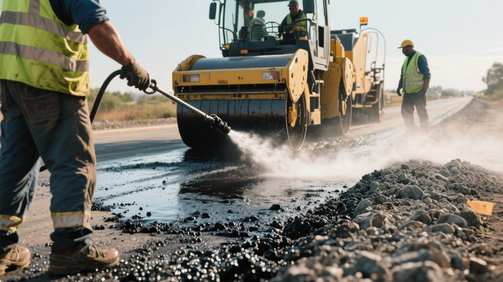
Битумная эмульсия — это жидкий материал, представляющий собой дисперсную систему из мелких капель битума, равномерно распределённых в воде при помощи эмульгатора (поверхностно-активного вещества).
Эмульсия позволяет работать с битумом при значительно более низких температурах, чем горячий битум. Она не требует специального разогрева и наносится в холодном или тёплом состоянии, что делает её удобной, безопасной и экономичной в применении.
Основные компоненты:
- Битум (40–70% от массы) — вяжущее вещество, обеспечивающее адгезию и водонепроницаемость
- Вода — среда для диспергирования битума
- Эмульгатор — стабилизирует систему и определяет тип эмульсии
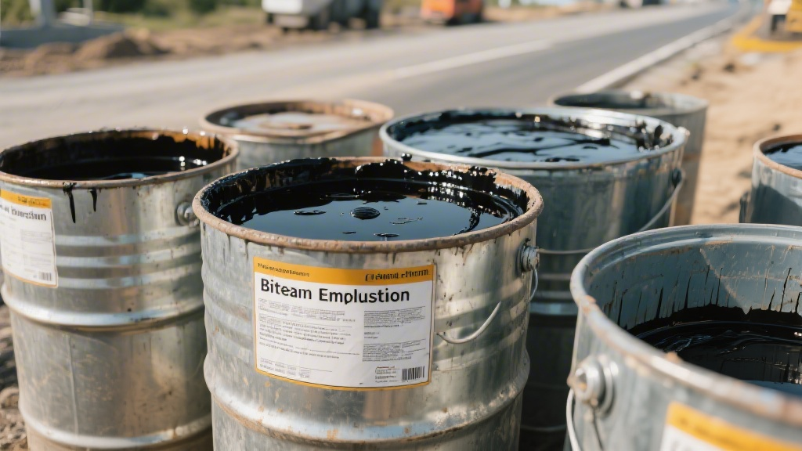
Битумные эмульсии классифицируются по нескольким ключевым признакам:
По типу эмульгатора:
- Анионные — частицы битума несут отрицательный заряд. Хорошо работают с известняковыми материалами.
- Катионные — частицы битума несут положительный заряд. Более распространены, так как совместимы с большинством каменных материалов, включая гранит.
По скорости распада:
| Обозначение | Скорость распада | Применение |
|---|---|---|
| БР | Быстрораспадающаяся | Подгрунтовка, поверхностная обработка |
| СР | Среднераспадающаяся | Пропитка, смешивание с щебнем |
| МР | Медленнораспадающаяся | Холодные смеси, ямочный ремонт |
Концентрация битума в эмульсии обычно составляет от 40% до 70%. Чем выше концентрация, тем больше вяжущего остаётся на поверхности после испарения воды.
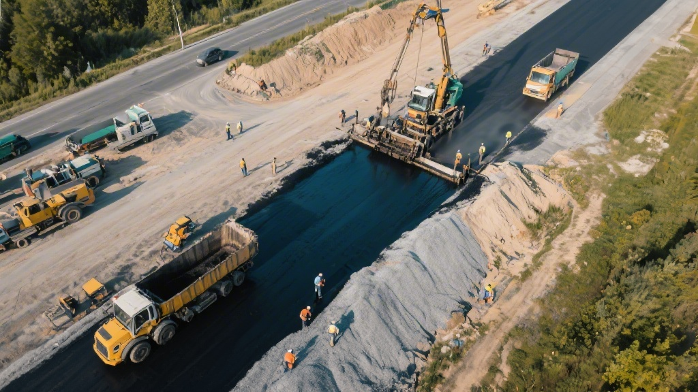
Основные области применения битумной эмульсии в дорожной отрасли:
🔹 Грунтовка (подгрунтовка) — нанесение тонкого слоя на основание для улучшения сцепления между слоями дорожной одежды.
🔹 Поверхностная обработка — создание защитного слоя на существующем покрытии. Продлевает срок службы дороги, восстанавливает водонепроницаемость.
🔹 Ремонт трещин — заливка и герметизация трещин в асфальтовом покрытии для предотвращения дальнейшего разрушения.
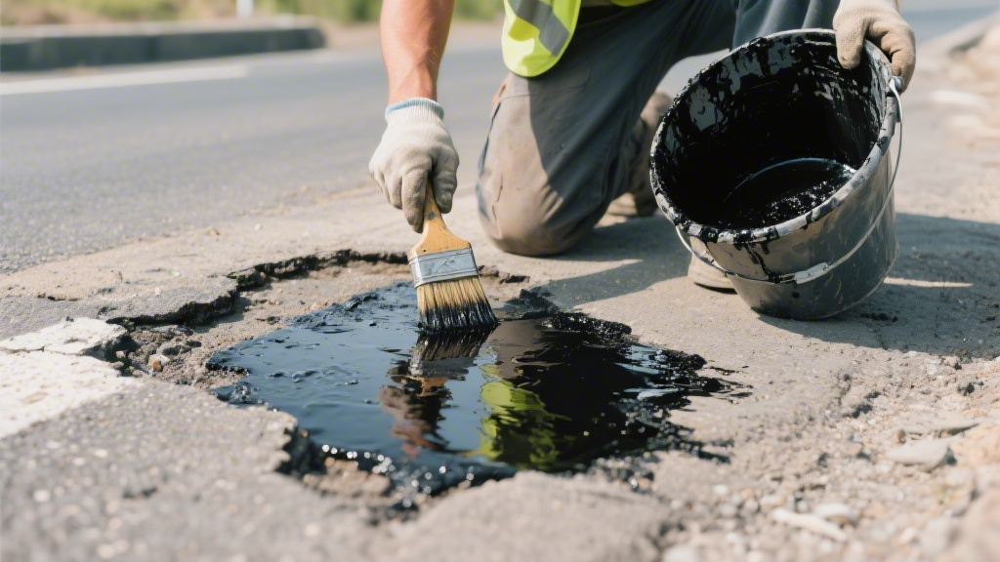
Выбор способа нанесения зависит от масштаба работ и доступного оборудования:
| Способ | Объёмы | Описание |
|---|---|---|
| Ручной | Малые площади | Распределительная лейка, щётки, ручные распылители. Подходит для ямочного ремонта, заделки трещин, обработки локальных участков. |
| Автогудронатор | Большие площади | Специализированная машина с системой подогрева, насосом и распределительной рампой. Обеспечивает равномерное нанесение с точным контролем расхода. |
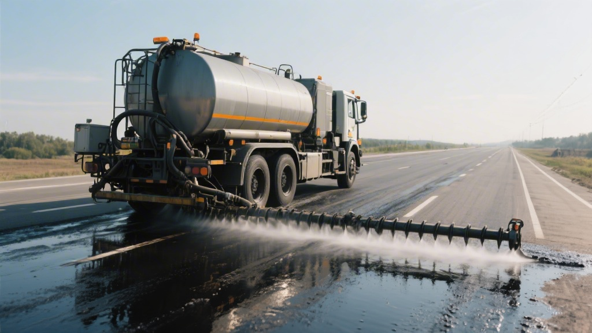
Нормы расхода зависят от вида работ и типа обрабатываемой поверхности:
| Вид работ | Расход, л/м² | Примечание |
|---|---|---|
| Подгрунтовка основания | 0,3–0,5 | На плотное основание |
| Подгрунтовка (пористое основание) | 0,5–0,8 | Щебёночное/гравийное |
| Пропитка асфальтной крошки | 0,8–1,0 | Для связывания частиц |
| Поверхностная обработка (1 слой) | 0,8–1,2 | По существующему покрытию |
| Поверхностная обработка (2 слоя) | 1,5–2,5 | Суммарно оба слоя |
| Ремонт трещин | 0,2–0,4 | Зависит от ширины трещин |
Пример: участок 1000 м², пропитка крошки: 1000 × 0,9 = 900 литров (~0,9 тонны)
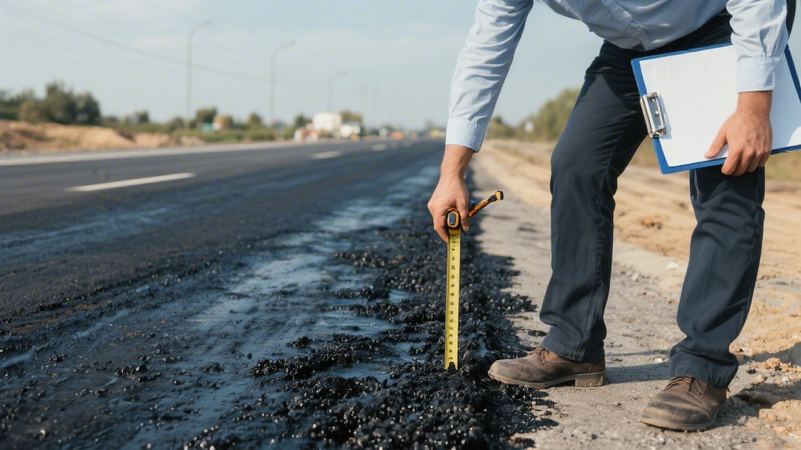
Для достижения наилучшего результата соблюдайте следующие рекомендации:
💧 Подготовка поверхности: основание должно быть чистым — без пыли, грязи, луж и рыхлого материала. При необходимости — подмести или продуть компрессором.
📏 Равномерность: следить за однородностью слоя. Пропуски снижают качество. Избыток ведёт к скользкости и перерасходу.
⏱ Время отверждения: дать эмульсии «сломаться» (распасться) — вода испаряется, битум остаётся. Обычно от 30 минут до нескольких часов в зависимости от погоды. Не допускать движение по свежему слою.
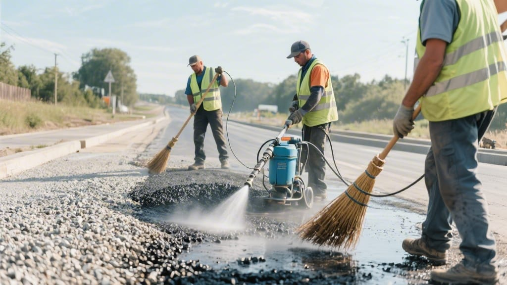
Почему битумная эмульсия — современный выбор для дорожных работ:
🍃 Экологичность — минимальные выбросы, отсутствие токсичных паров при нанесении. Безопасна для работников.
🔧 Универсальность — подходит для широкого спектра работ: от подгрунтовки до ремонта трещин и поверхностной обработки.
✅ Простота — нанесение холодным способом, минимум специального оборудования для малых объёмов.
Битумная эмульсия — это современный, экономичный и экологичный материал, незаменимый в дорожном строительстве и ремонте.
Основные выводы:
- Катионные эмульсии — стандарт рынка, совместимы с большинством материалов
- Выбирайте скорость распада под конкретную задачу (БР для подгрунтовки, СР для пропитки, МР для холодных смесей)
- Соблюдайте нормы расхода — это ключ к качеству и экономии
- Работайте при +5...+30°C на чистом, подготовленном основании
- Для больших объёмов — автогудронатор, для малых — ручное нанесение
Асфальтобетон — это искусственный строительный материал, широко применяемый в дорожном строительстве. Он отличается высокой прочностью, долговечностью и универсальностью.
Различные марки и типы асфальтобетона позволяют подбирать материал под конкретные задачи и условия эксплуатации — от скоростных магистралей до пешеходных дорожек во дворах.
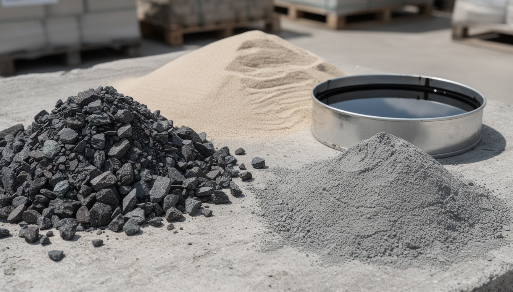
Основные характеристики:
- Средняя плотность — 2,5 т/м³
- Стандарт качества — ГОСТ 9128-2013
Компоненты асфальтобетона:
| Компонент | Доля | Назначение |
|---|---|---|
| Битум | 2,5–9% | Вяжущее вещество, обеспечивает эластичность и водонепроницаемость |
| Щебень / гравий | 30–67% | Основной каркас для прочности и несущей способности |
| Минеральные порошки | 5–15% | Заполнители для улучшения структуры и плотности |
| Песок | 20–50% | Заполнение пустот, улучшение удобоукладываемости |
| Модифицирующие добавки | по рецепту | Улучшение шероховатости, звукоизоляции, сцепления |
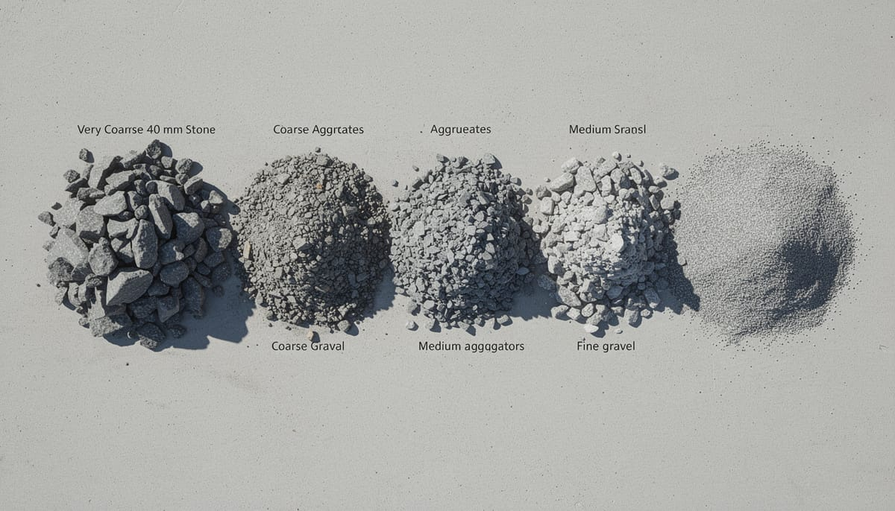
Асфальтобетон классифицируют по основному каменному материалу:
| Тип | Прочность | Применение |
|---|---|---|
| Щебёночные | Высокая | Дороги с интенсивным движением, магистрали, промзоны |
| Гравийные | Средняя | Второстепенные дороги, подъездные пути |
| Песчаные | Низкая | Пешеходные зоны, тротуары, велодорожки |
По размеру зёрен:
- Крупнозернистые — зёрна более 20 мм. Для нижних слоёв дорожной одежды.
- Мелкозернистые — зёрна 5–20 мм. Для верхних слоёв покрытия.
- Песчаные — зёрна менее 5 мм. Для тротуаров и пешеходных зон.
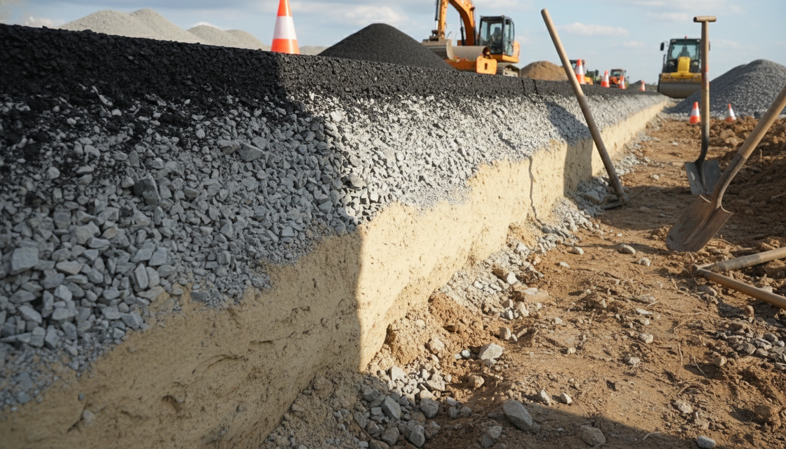
Плотность асфальтобетона напрямую влияет на его прочность и стоимость:
| Плотность | Остаточная пористость | Применение |
|---|---|---|
| Высокоплотные | 1–2,5% | Верхние слои дорог с максимальными нагрузками |
| Плотные | 2,5–5% | Универсальный вариант для большинства дорог |
| Пористые | 5–10% | Нижние слои дорожной одежды, второстепенные дороги |
| Высокопористые | 10–18% | Только нижние (выравнивающие) слои |
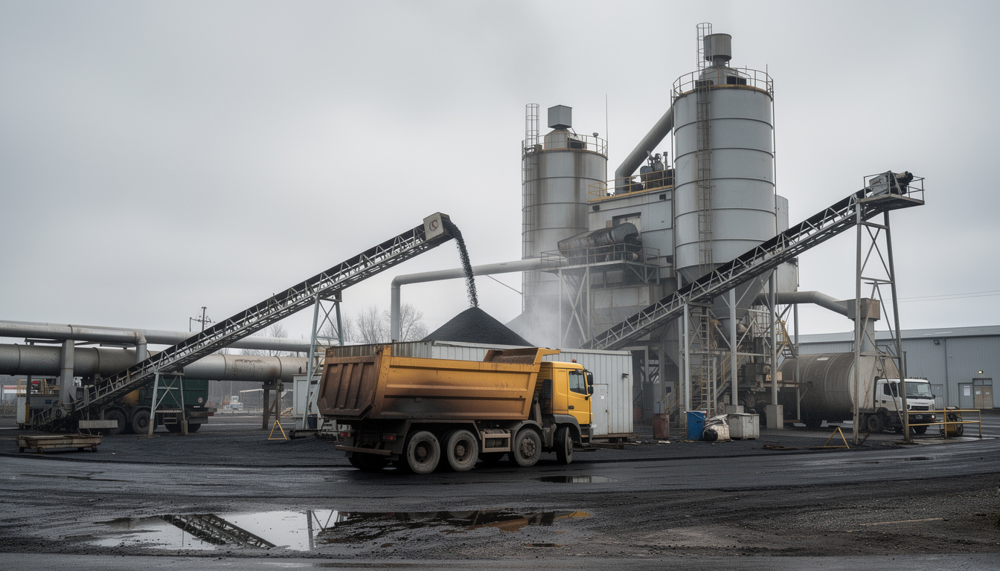
Применение: нижний слой дорог с высокими нагрузками, магистрали, промышленные территории.
Особенности: максимальная прочность и износостойкость. Самая высокая стоимость.
Применение: строительство и ремонт автодорог общего пользования, благоустройство территорий, парковки, дворы.
Особенности: оптимальное соотношение цены и качества. Самая популярная марка.
Применение: пешеходные дорожки, тротуары, аллеи, площадки с минимальной нагрузкой.
Особенности: низкая прочность, но доступная цена.
Типы определяют содержание щебня/гравия в смеси и, соответственно, область применения:
| Тип | Содержание щебня/гравия | Применение |
|---|---|---|
| А | 50–67% | Дороги с высокими нагрузками, магистрали |
| Б | 40–50% | Автодороги общего пользования, парковки |
| В | 30–40% | Второстепенные дороги, подъездные пути |
| Г | Песок (30%) | Пешеходные зоны, дворовые территории |
| Д | Песок из отсева (70%) | Тротуары, дворовые территории, площадки |
В — второстепенные дороги.
Г, Д — для пешеходов (песчаные, более гладкие).
Преимущества:
✔ Высокая прочность и плотность
✔ Отличное уплотнение катком
✔ Долгий срок службы покрытия
Ограничения:
❌ Нельзя укладывать при отрицательных температурах
❌ Нельзя при высокой влажности и осадках
❌ Требуется специальная техника (асфальтоукладчик, каток)
Применение: основной вид работ — дороги, парковки, промзоны. 95% всех работ Транском — горячие смеси.
Преимущества:
✔ Длительный срок хранения
✔ Возможность работ при отрицательных температурах
✔ Не требуется специальная техника
Недостатки:
❌ Низкая прочность по сравнению с горячими
❌ Высокая стоимость материала
Применение: ямочный ремонт зимой, пешеходные дорожки, временные решения, придомовые территории.
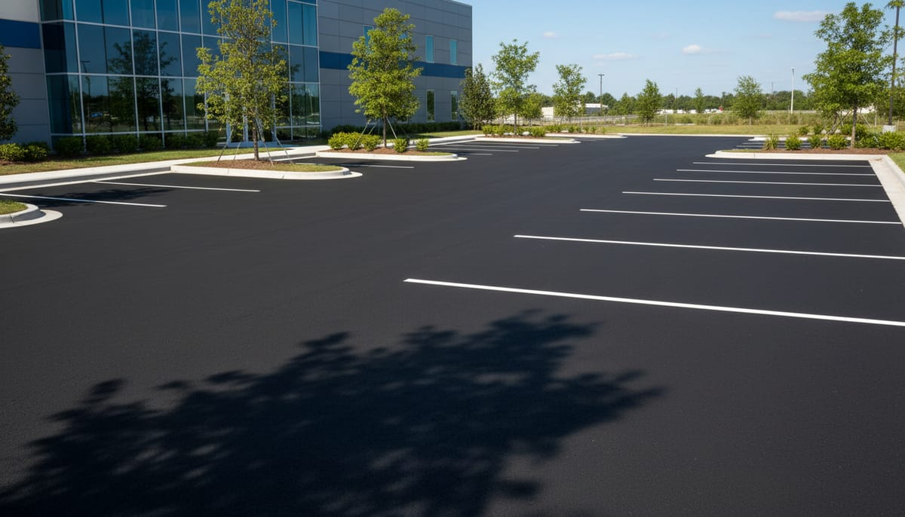
Основные выводы для работы с клиентами:
- Марка 2 — универсальная, подходит для 80% клиентов (дворы, парковки, подъезды)
- Тип Б — стандарт для автодорог общего пользования
- Горячие смеси — основной вид работ, лучшее качество
- Холодные смеси — для зимнего ямочного ремонта
- Всегда уточняйте нагрузки — от этого зависит «пирог» и цена
- Мы работаем только с проверенными заводами — каждая партия с паспортом качества
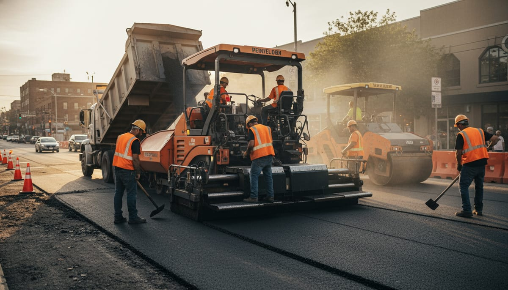
Укладка асфальтобетонной смеси (АБС) выполняется двумя способами:
- Механизированным методом — с использованием асфальтоукладчика
- Ручным методом — для малых объёмов или сложных участков
Рабочие с лопатами (2–3 человека) — подравнивают смесь по краям, устраняют неровности.
Гладильщики (1–2 человека) — работают с виброплитами или ручными катками для предварительного уплотнения.
Технология:
- Подготовка основания — очистка от мусора, грунтовка битумной эмульсией (при необходимости).
- Подача смеси — асфальтоукладчик получает АБС из самосвала через бункер.
- Распределение смеси — укладчик равномерно распределяет АБС с заданной толщиной (от 4 до 10 см).
- Предварительное уплотнение — встроенный вибрационный механизм укладчика уплотняет слой.
- Окончательное уплотнение — катки (гладковальцовые, пневмоколесные) завершают процесс.
Преимущества:
- Высокая скорость и равномерность укладки
- Минимизация ручного труда
- Идеально для больших площадей (дороги, парковки, площадки)
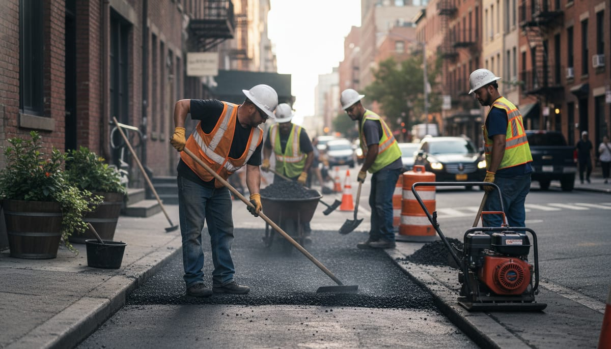
Применение:
- Небольшие объёмы (до 1 000 м²)
- Участки сложной формы (тротуары, приямки, вокруг люков)
- Ремонтные работы (ямочный ремонт)
Лопатчики (3–4 человека) — распределяют АБС лопатами, помогают швабристу.
Технология:
- Подготовка основания — аналогично механизированному методу.
- Ручное распределение смеси — лопатчики выгружают АБС из тачки или кузова.
- Разравнивание — швабрист использует правило, гладильные доски или виброрейки.
- Уплотнение — ручные виброплиты или малые катки.
Преимущества: гибкость — подходит для труднодоступных мест. Низкие затраты на аренду техники.
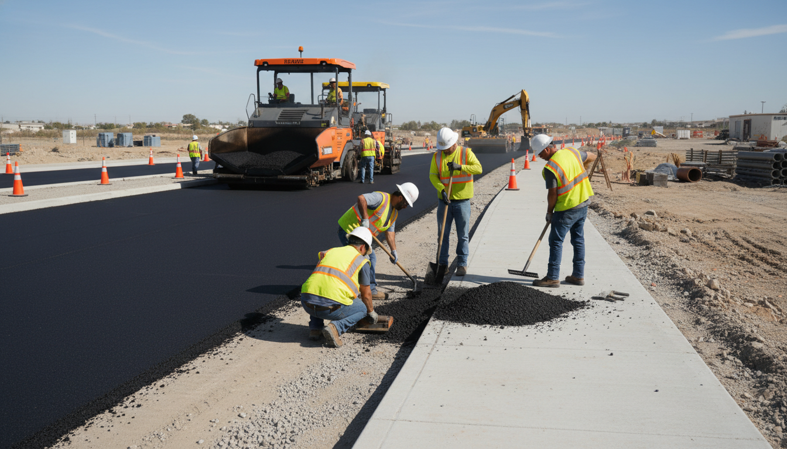
| Критерий | Механизированная | Ручная |
|---|---|---|
| Производительность | До 4 000 м²/день | До 1 000 м²/день |
| Точность | Высокая (ровный слой) | Зависит от навыков бригады |
| Состав бригады | Оператор + 3–4 рабочих | Швабрист + 3–4 лопатчика |
| Стоимость | Выше (техника, топливо) | Ниже (минимум техники) |
| Применение | Крупные объекты, прямые участки | Малые площади, сложные формы |
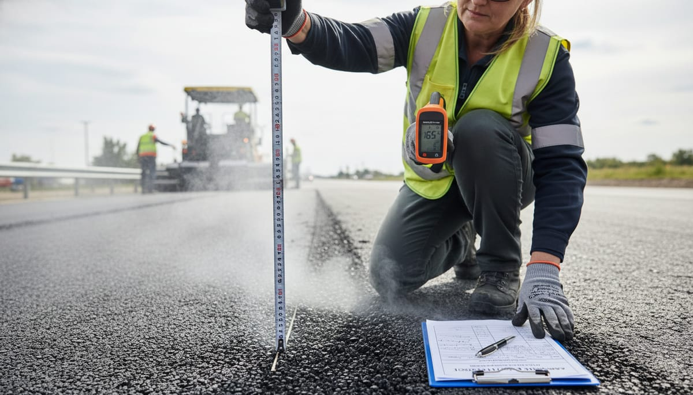
✔ Для локального ремонта или узких тротуаров — ручная укладка.
✔ На больших объектах со сложными участками — комбинация обоих методов.
✔ Уплотнение должно достигать 96–98% от максимальной плотности (ГОСТ 31015-2002).
✔ Рабочие должны использовать СИЗ: перчатки, защитные очки, обувь с термостойкой подошвой.
На объекте необходимо уложить 800 м² асфальта вокруг здания с множеством углов и приямков. Какой метод?
Ответ: Ручная укладка. Обоснование: малый объём и сложная форма участка — укладчик не пройдёт в углы и вокруг приямков.
После укладки асфальта на дороге появились неровности. Какие ошибки могли быть допущены?
Ответ: Недостаточное уплотнение катком (мало проходов или низкая температура смеси). Неправильная подготовка основания — ямы и просадки в грунте проявились через покрытие.
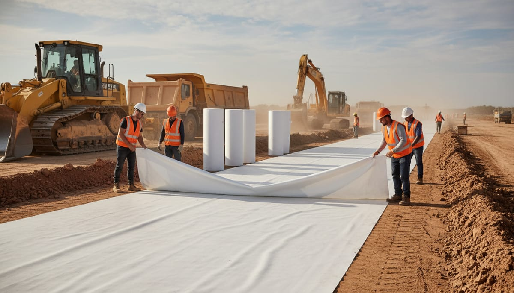
Геотекстиль и геосетки — ключевые геоматериалы, используемые для улучшения свойств дорожных конструкций.
- Геотекстиль выполняет функции: разделение слоёв, фильтрация, дренаж, армирование
- Геосетки применяются для армирования асфальтобетона, укрепления слабых грунтов и откосов
СП 45.13330.2017 — применение геоматериалов в строительстве
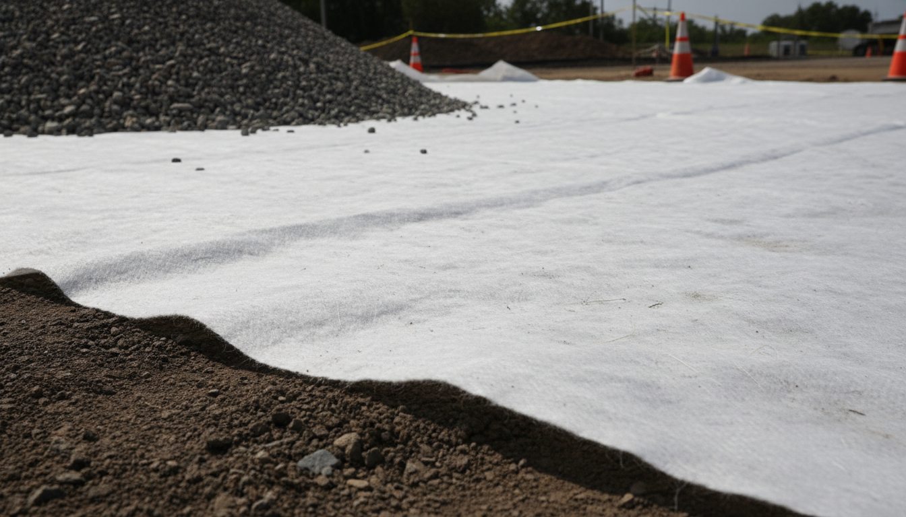
✔ Препятствует проникновению мелких частиц грунта в щебёночное основание
✔ Сохраняет целостность конструктивных слоёв
✔ Задерживает частицы грунта
✔ Предотвращает заиливание дренажных систем
✔ Распределяет нагрузку на большую площадь
✔ Снижает вероятность образования колеи и просадок
✔ Ускоряет процесс консолидации грунта
✔ Предотвращает накопление воды в основании
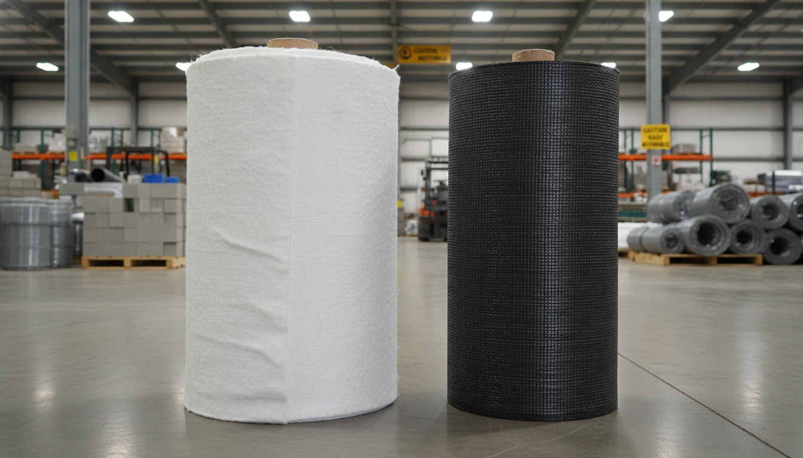
| Параметр | Нетканый (основной) | Тканый |
|---|---|---|
| Производство | Иглопробивной / термоскреплённый | Ткацкий из полипропиленовых нитей |
| Плотность | 100–600 г/м² | 80–400 г/м² |
| Сильная сторона | Высокая водопроницаемость | Высокая прочность на растяжение |
| Марки | Дорнит, Геоспан ТС, Террам | Геоспан ТН, Стабитекс |
| Применение | Разделение слоёв, фильтрация | Армирование, укрепление склонов |
Основные технические параметры: поверхностная плотность (г/м²), прочность при растяжении (кН/м), удлинение при разрыве (%), водопроницаемость (л/м²/с), устойчивость к УФ, морозостойкость.
Маркировка: Дорнит 200 = нетканый материал плотностью 200 г/м².
■ Временные дороги — нетканый, 200–300 г/м² (разделение + фильтрация)
■ Постоянные дороги — тканый, 300–400 г/м² (армирование + долговечность)
■ Дренажные системы — нетканый, 150–250 г/м² (высокая водопроницаемость)
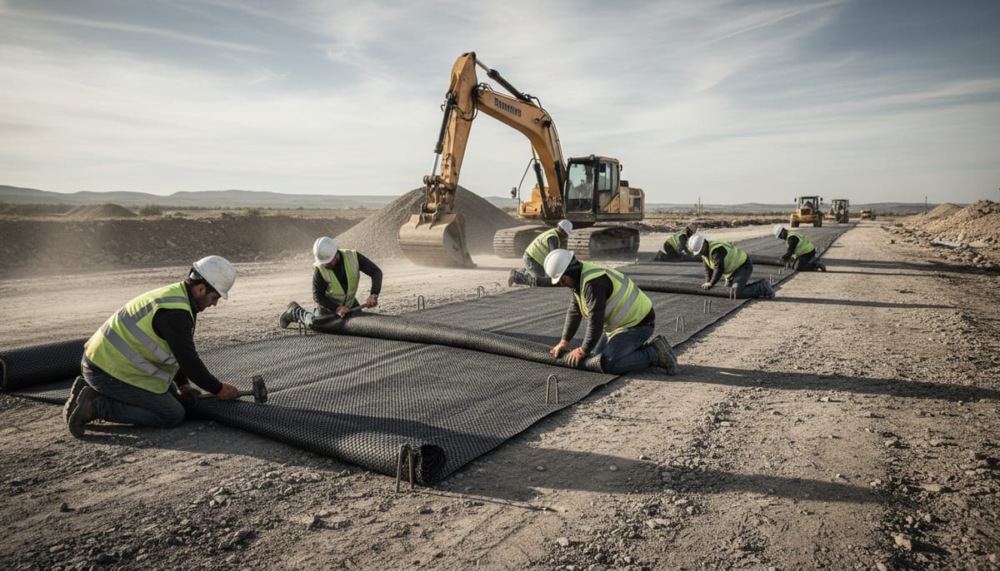
Монтаж:
- Подготовка: удаление растительности, выравнивание, уплотнение грунта
- Укладка: раскатка рулонов с нахлёстом 20–30 см, закрепление анкерами или пригрузом
- Контроль: проверка целостности, контроль нахлёста, засыпка не позднее смены
✔ Увеличение срока службы дороги в 1,5–2 раза
✔ Сокращение затрат на ремонт и обслуживание
✔ Возможность работы в сложных погодных условиях
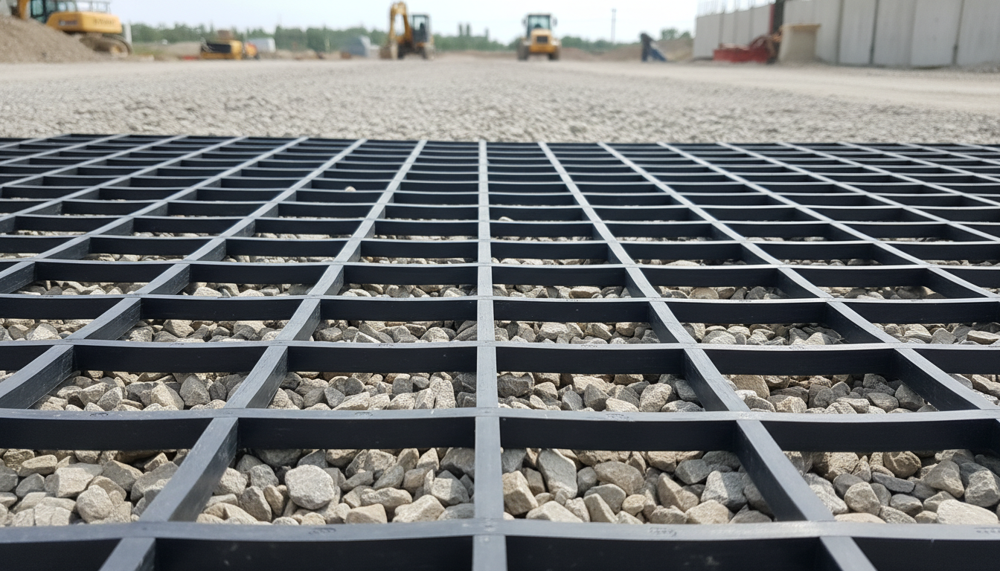
| Материал | Преимущества | Особенности |
|---|---|---|
| Полипропиленовые (ПП) | Устойчивы к химии, долговечны | Относительно недороги |
| Полиэфирные (ПЭТ) | Высокая прочность, минимальная ползучесть | Стабильность размеров |
| Стеклянные | Высокий модуль упругости | Хрупкость при динамических нагрузках |
| Базальтовые | Высокая прочность, устойчивость к агрессивным средам | Долговечность |
По структуре: одноосные (1 направление), двухосные (2 направления), трёхосные (6 направлений).
Размеры: ширина 2–6 м, длина 50–100 м, ячейки от 25×25 до 80×80 мм.
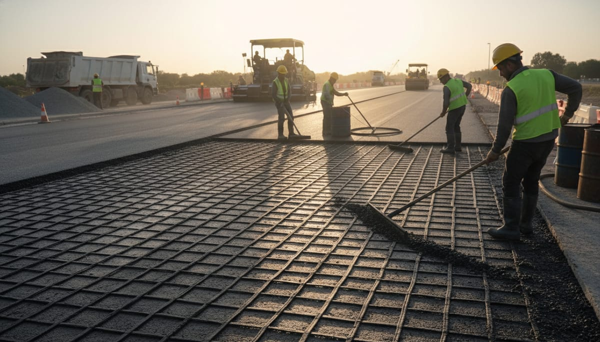
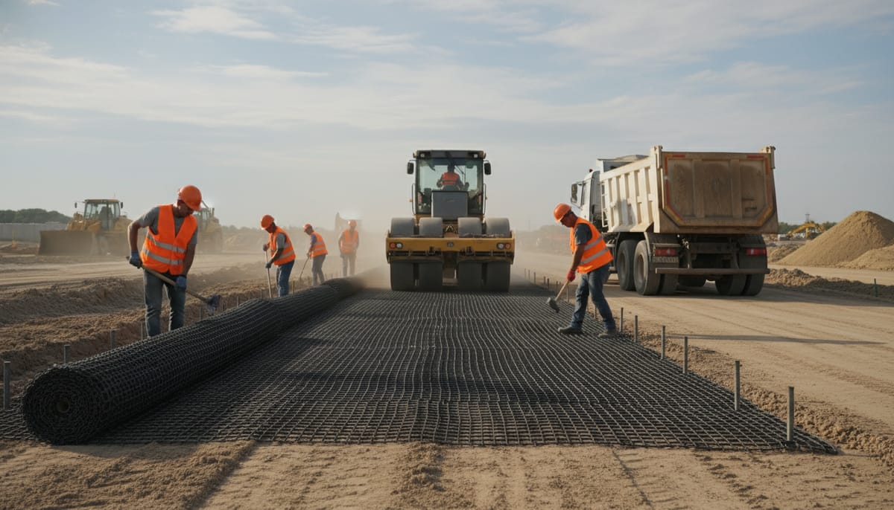
Монтаж:
- Подготовка: планировка, удаление острых предметов, ровность основания
- Укладка: раскатка по направлению движения, натяжение, фиксация, нахлёст 15–25 см
- В асфальтобетон: очистка → розлив битумной эмульсии → геосетка → укатка пневмокатком → верхний слой
■ Для асфальтобетона: стеклянные/базальтовые, ячейки 25×25 мм, прочность 50–100 кН/м
■ Для основания: ПП/ПЭТ, ячейки 30×30 – 40×40 мм, прочность 30–60 кН/м
■ Для слабых грунтов: ПЭТ, ячейки 60×60 – 80×80 мм, прочность от 100 кН/м
✔ Срок службы в 1,5–2 раза дольше
✔ Ускорение строительства, работа в сложных условиях
- Геотекстиль — разделяет слои, фильтрует воду, экономит щебень на 25–30%
- Геосетки — армируют покрытие, предотвращают трещины, увеличивают срок службы
- Применение геоматериалов — признак профессионального подхода
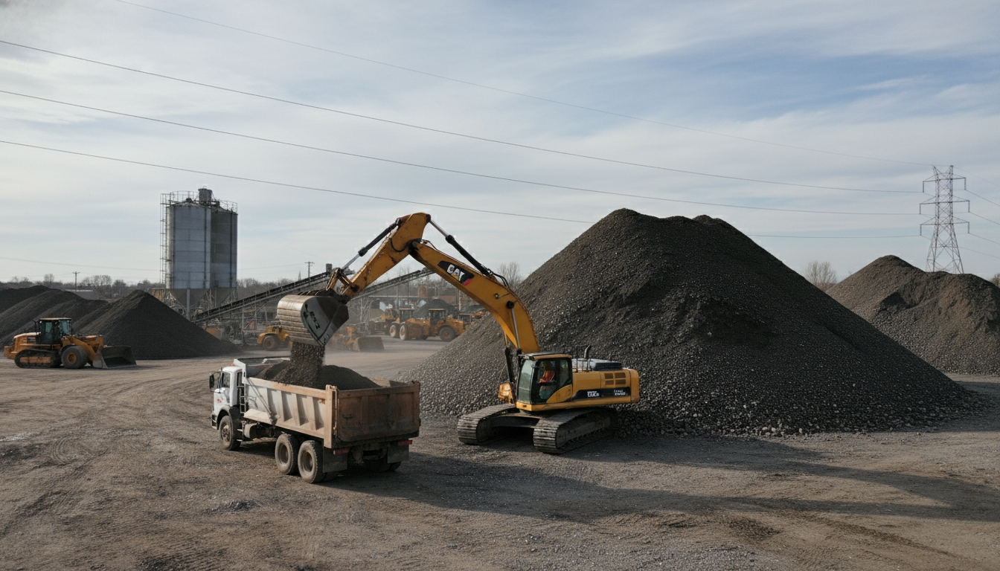
Асфальтная крошка — это вторичный материал, получаемый путём переработки старого асфальтового покрытия. Её использование в дорожном строительстве и благоустройстве способствует снижению затрат на материалы и уменьшению экологической нагрузки.
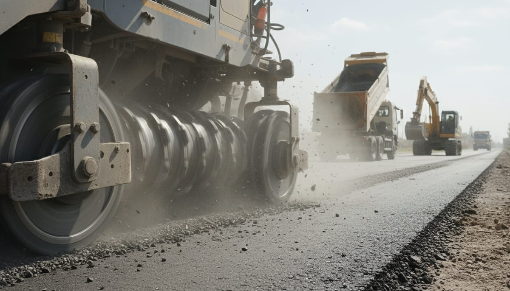
Асфальтная крошка производится путём переработки старого покрытия. Основные этапы:
- Демонтаж старого покрытия — с помощью специальной техники (фрезы, грейдеры) снимается верхний слой асфальта
- Дробление — измельчение снятого асфальта до мелких фракций (обычно 5–40 мм)
- Очистка — удаление посторонних примесей: металл, стекло и другие материалы
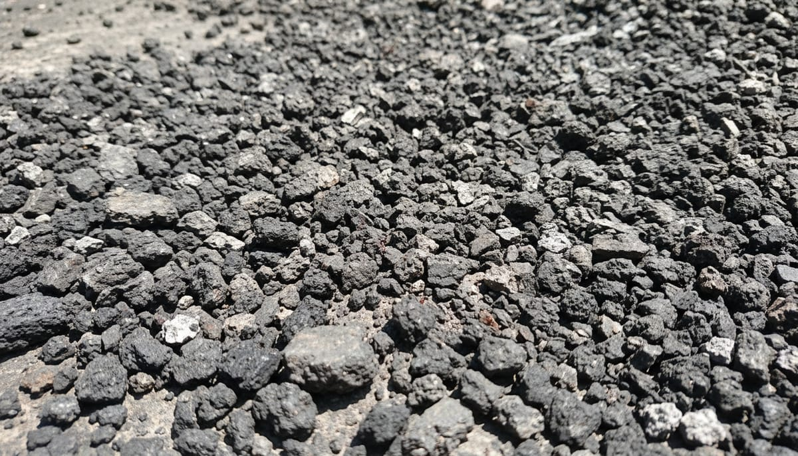
Состав:
- Битум — связующий компонент, обеспечивающий адгезию
- Минеральные заполнители — щебень, песок и другие материалы, придающие прочность
- Добавки — в некоторых случаях модификаторы для улучшения свойств
Основные свойства:
- Высокая прочность и износостойкость
- Хорошая адгезия с новыми материалами
- Экономичность и экологичность
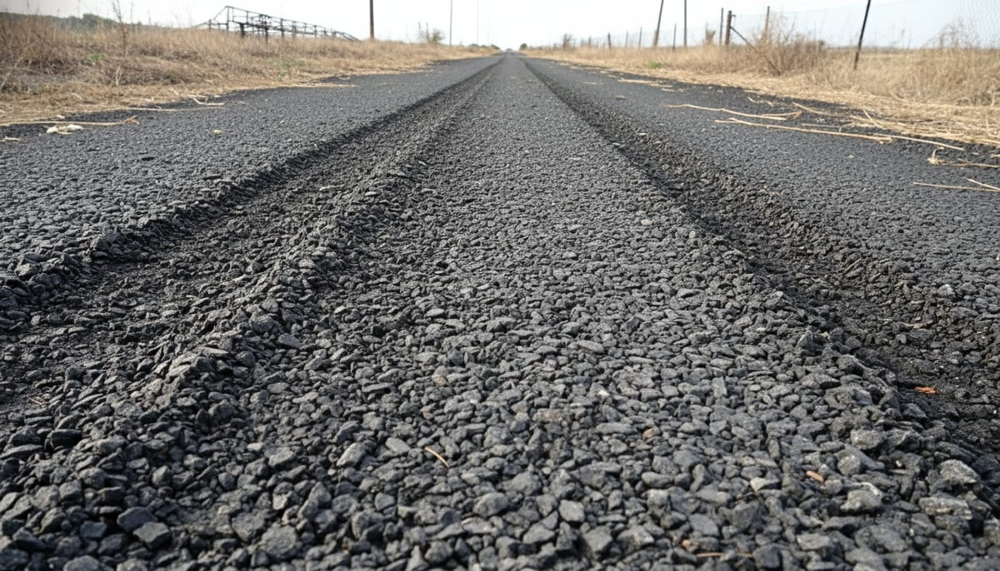
✔ Ремонт и восстановление асфальтовых покрытий
✔ Создание временных дорог и подъездных путей
✔ Обустройство парковок и спортивных площадок
✔ Дворовые территории и площадки
✔ Укрепление откосов и насыпей
✔ Основание под новое покрытие
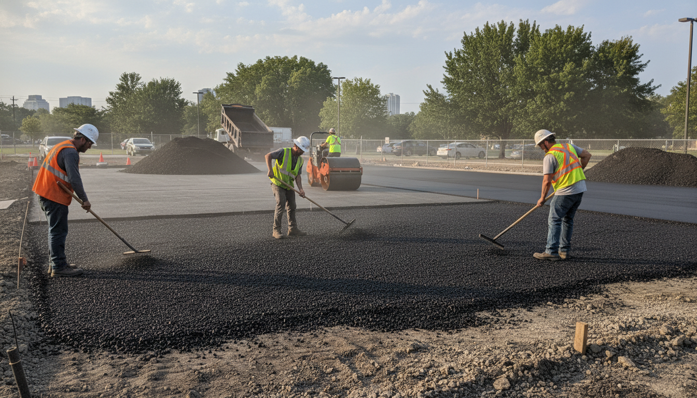
| Преимущество | Описание |
|---|---|
| Экономия ресурсов | Снижение затрат на добычу и транспортировку новых материалов |
| Экологичность | Уменьшение объёма отходов и выбросов CO2, вторичное использование |
| Долговечность | Высокая устойчивость к нагрузкам и перепадам температур |
| Простота укладки | Не требует сложной техники — грейдер + каток |
| Самоуплотнение | Со временем становится плотнее под воздействием транспорта и тепла |
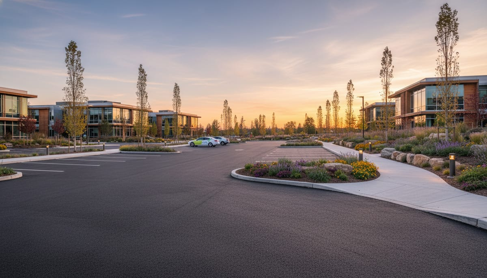
- Крошка — бюджетная альтернатива новому асфальту для временных и второстепенных покрытий
- Отличный вариант для подъездных путей, парковок, площадок, грунтовых дорог
- Можно предлагать как первый этап — потом положить асфальт сверху
- Экологичность — вторичное использование, меньше отходов
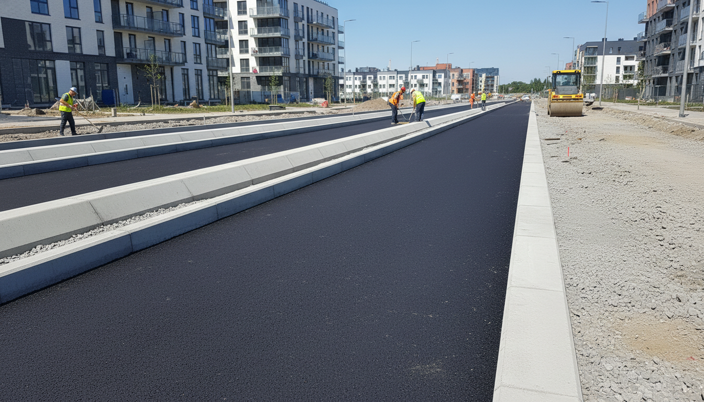
Бордюры — важный элемент благоустройства, который выполняет как эстетическую, так и функциональную роль:
- Ограничение дорожного покрытия (дорожные бордюры)
- Оформление садовых дорожек, клумб и газонов (садовые бордюры)
- Защита покрытия от разрушения и предотвращение расползания материалов
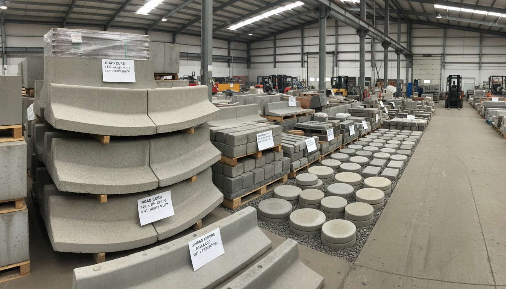
| Тип | Размеры (мм) | Материал | Применение |
|---|---|---|---|
| Дорожный БР 1000×300×180 | 1000×300×180 | Бетон / железобетон | Тротуары, дороги, парковки |
| Дорожный БР 1000×300×150 | 1000×300×150 | Бетон / железобетон | Тротуары, дороги |
| Садовый БР 1000×200×80 | 1000×200×80 | Бетон | Дорожки, клумбы, газоны |
Дорожные бордюры: высокая прочность и устойчивость к нагрузкам, вес 80–100 кг, требуют спецтехники для перемещения.
Садовые бордюры: декоративный вид, вес до 50 кг, монтируются вручную.
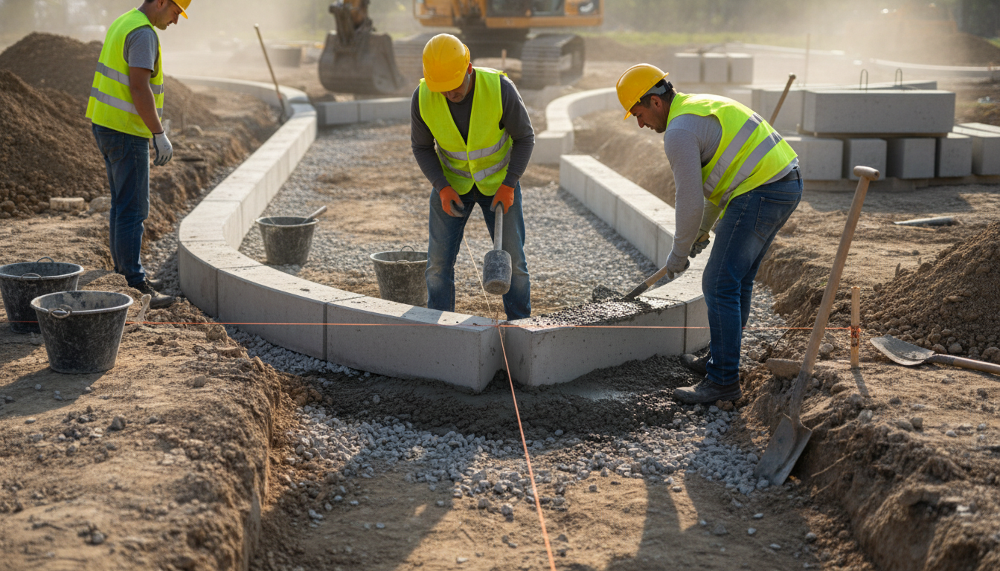
1. Разметка:
- Колышки и шнур — обозначить линию укладки
- Убедиться, что разметка соответствует проекту
2. Подготовка траншеи:
- Глубина: 20–30 см (зависит от высоты бордюра)
- Ширина: на 5–10 см больше ширины бордюра
3. Устройство основания:
- Слой песка 5–10 см, утрамбовать виброплитой
- Для дорожных бордюров — слой щебня 10–15 см для прочности
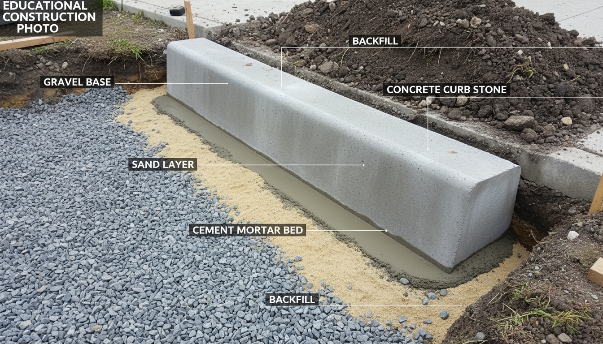
1. Приготовление раствора:
- Цементно-песчаный раствор 1:3 (1 часть цемента, 3 части песка)
- Для дорожных бордюров — тощий бетон для большей прочности
2. Установка бордюров:
- Нанести слой раствора на основание
- Установить бордюр, выравнивая по шнуру и уровню
- Проверять горизонтальность и вертикальность строительным уровнем
- Фиксировать резиновым молотком
3. Заполнение швов:
- Заполнить швы между бордюрами раствором
- Убедиться, что швы плотные, без пустот
| Тип бордюра (ГОСТ) | Размеры (В×Ш, мм) | Бетон (м³/п.м) |
|---|---|---|
| БР 100.30.18 | 300×180 | 0,035–0,04 |
| БР 100.30.15 | 300×150 | 0,03–0,035 |
| БР 100.20.8 | 200×80 | 0,02–0,025 |
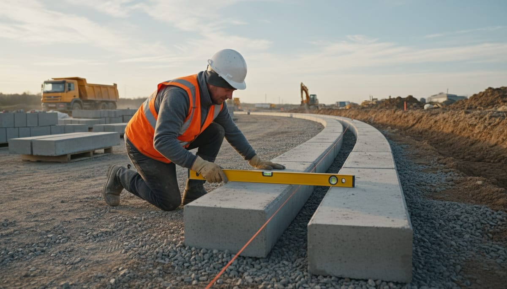
1. Засыпка траншеи:
- Заполнить пространство между бордюром и стенкой траншеи песком или грунтом
- Утрамбовать засыпку
2. Уход за раствором:
- 1–2 дня после укладки — увлажнять бордюры для набора прочности
- Избегать механических нагрузок первые 2–3 дня
Земляные: лопата, кирка
Для раствора: ёмкость для замеса, мастерок, резиновый молоток
Для уплотнения: виброплита или ручная трамбовка
СИЗ: перчатки, очки, маска
| Параметр | Дорожные | Садовые |
|---|---|---|
| Скорость (бригада 3–4 чел.) | 30–50 м/день | 60–90 м/день |
| Вес единицы | 80–100 кг | до 50 кг |
| Основание | Песок + щебень + тощий бетон | Песчаное основание |
| Техника | Нужна для перемещения | Вручную |
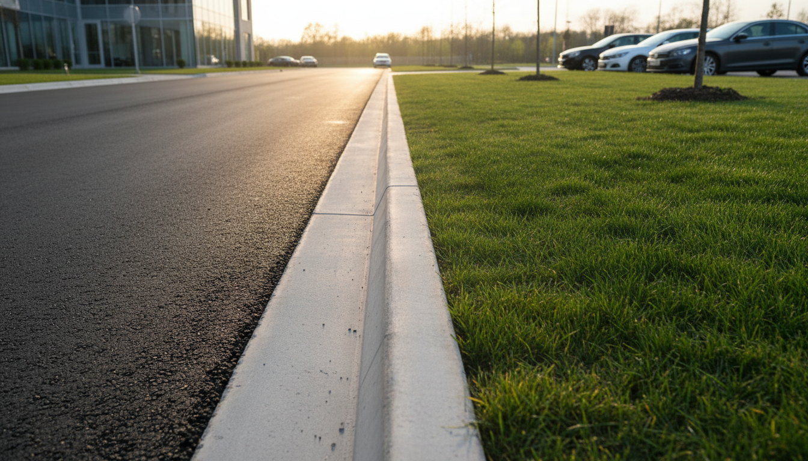
- Бордюры — обязательный элемент, без них покрытие расползается
- Дорожные (БР 1000×300×180) — для дорог, парковок, тротуаров
- Садовые (БР 1000×200×80) — для дорожек, клумб, газонов
- Предлагайте бордюры как допуслугу к каждому проекту асфальтирования
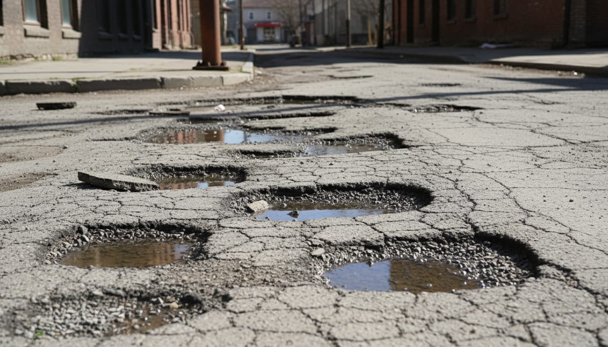
Ямочный ремонт — технология восстановления дорожного покрытия для устранения локальных повреждений: ям, выбоин, трещин. Это один из наиболее востребованных методов ремонта дорог — позволяет быстро и эффективно восстановить эксплуатационные свойства покрытия.
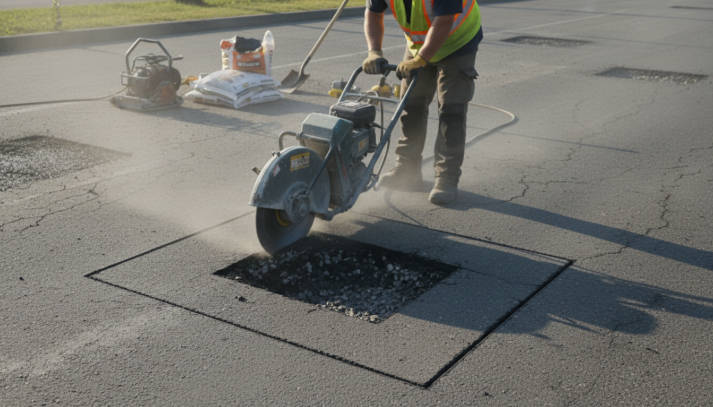
Этапы подготовки:
- Определение границ повреждений — обозначить зону ремонта с захватом 5–10 см неповреждённого покрытия
- Демонтаж старого покрытия — нарезка алмазным диском или гидромолотом, удаление разрушенного асфальта
- Уборка мусора — полная очистка ямы от кусков, пыли и мелких частиц
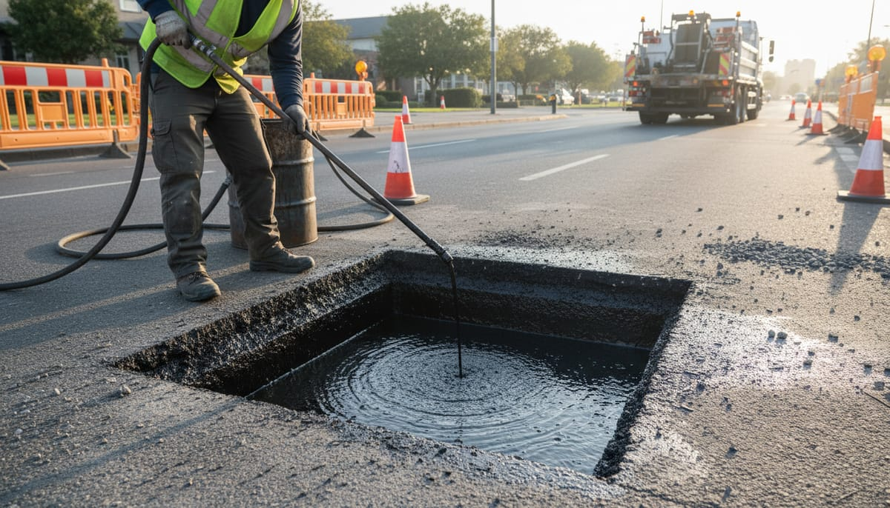
Края ямы и дно обрабатываются битумной эмульсией для улучшения адгезии между старым и новым слоями асфальта.
Назначение: создание «клеящего» слоя между старым и новым покрытием
Без эмульсии: новый асфальт отслоится от старого за 1–2 сезона
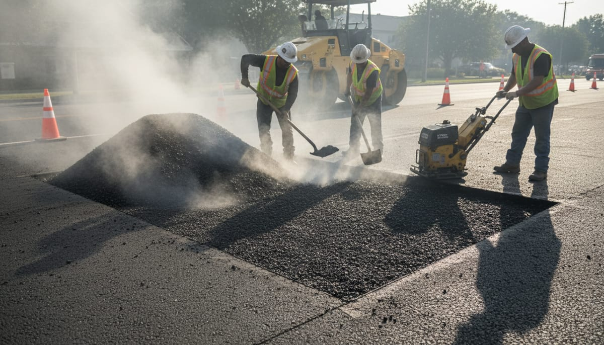
Температура укладки: 120–160°C
Технология:
- Асфальт укладывается равномерным слоем с небольшим избытком на 1–2 см выше уровня старого покрытия
- Избыток компенсирует усадку при уплотнении
- Слой должен быть однородным, без пустот и комков
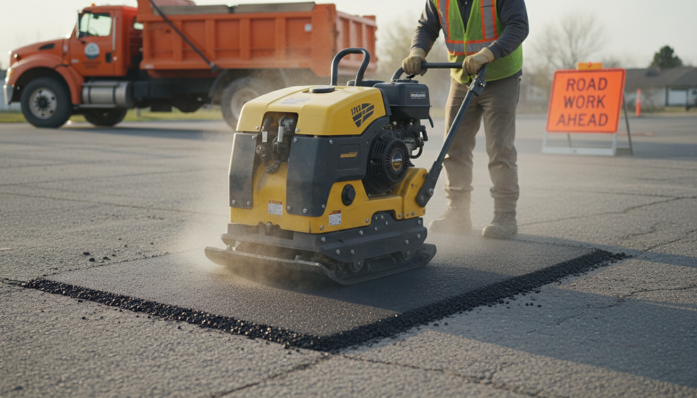
| Параметр | Малые объёмы (до 50 м²) | Большие объёмы (от 50 м²) |
|---|---|---|
| Оборудование | Виброплита | Катки 3–4 тонны |
| Проходов | 4–6 раз | 6–8 раз |
| Плотность | Не менее 97% от максимальной плотности | |
Финальная проверка:
- Проверяется ровность покрытия — заплатка должна быть вровень с окружающим покрытием
- При необходимости — корректировка высоты и дополнительное уплотнение
- Шов между старым и новым покрытием должен быть плотным, без зазоров
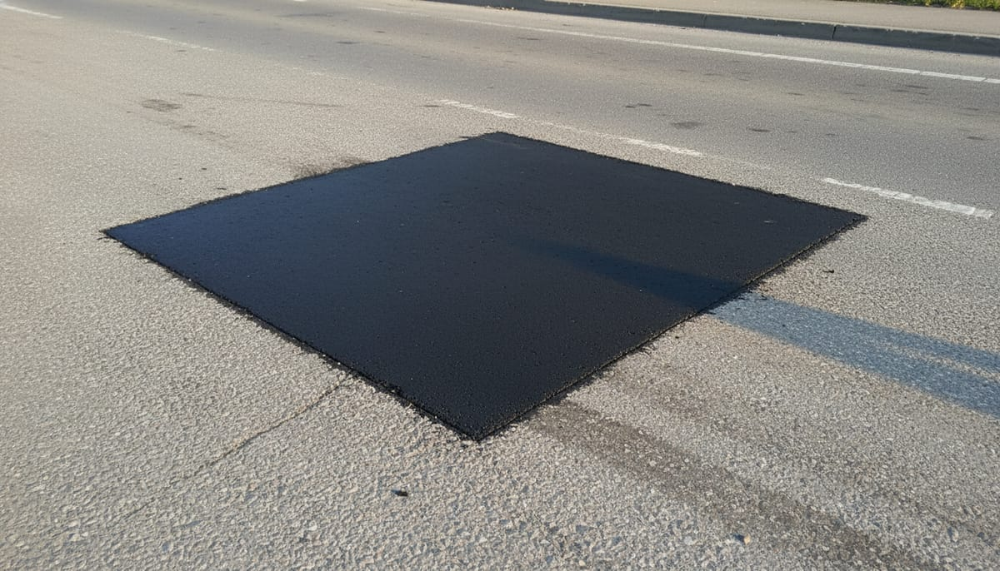
- 5 этапов: нарезка → демонтаж → эмульсия → укладка → уплотнение
- Эмульсия — ключевой этап, без неё ремонт не продержится
- Горячая смесь марки В2 при 120–160°C — стандарт качества
- Уплотнение до 97% — виброплитой или катком
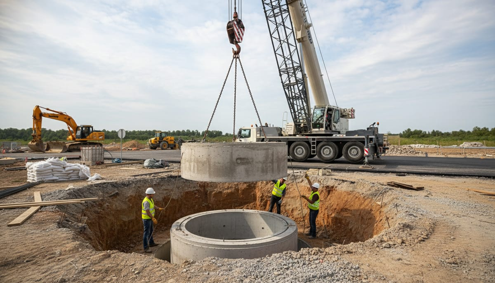
Бетонные колодцы — конструкции из железобетона для организации водоотвода, дренажных систем и обслуживания подземных коммуникаций. Используются для:
- Организации дренажных систем (ливневая канализация)
- Обслуживания подземных коммуникаций (водопровод, газ, электро)
- Контроля уровня воды и очистки сточных вод
- Установки на пересечениях трубопроводов или при изменении направления
Колодцы бывают круглыми, прямоугольными или квадратными — в зависимости от назначения.
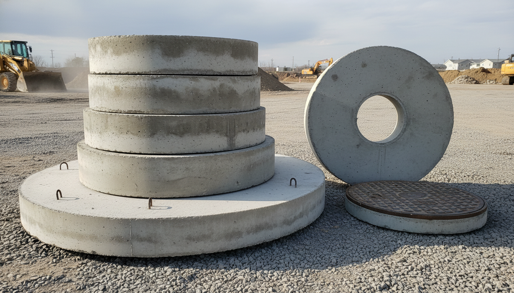
- Дренажные системы — сбор и отвод ливневых и грунтовых вод
- Канализационные системы — обслуживание трубопроводов, контроль стоков
- Водопроводные сети — установка запорной арматуры, контроль давления
- Электросети — размещение кабелей и оборудования
- Газовые сети — контроль и обслуживание газопроводов
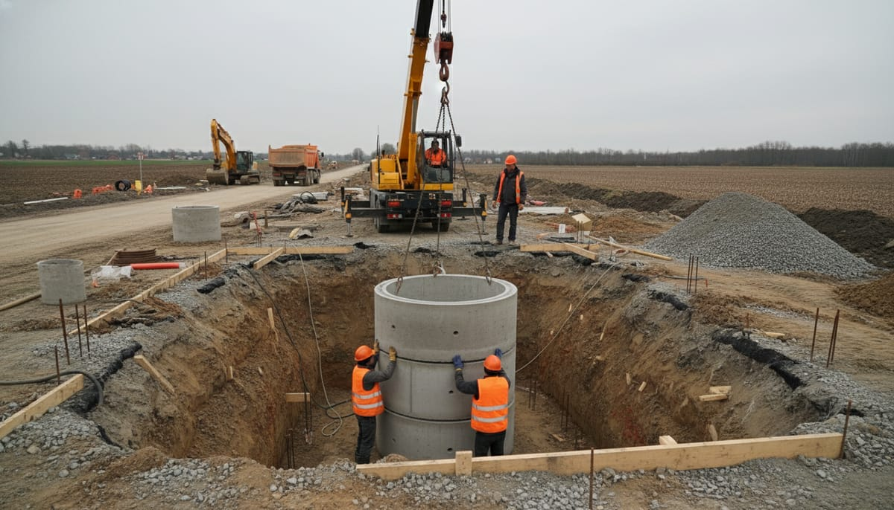
- Подготовка котлована — копка на нужную глубину, выравнивание и уплотнение дна
- Установка днища — укладка бетонного днища, при необходимости — песчаная подушка
- Монтаж стеновых колец — кольца ставятся краном одно на другое, между ними герметизирующая прокладка, швы заделываются цементным раствором
- Установка плиты перекрытия — сверху последнего кольца, проверка горизонтальности
- Монтаж люка — проверка соответствия нагрузке (пешеходная / автомобильная зона)
- Засыпка котлована — песком или грунтом с послойным уплотнением
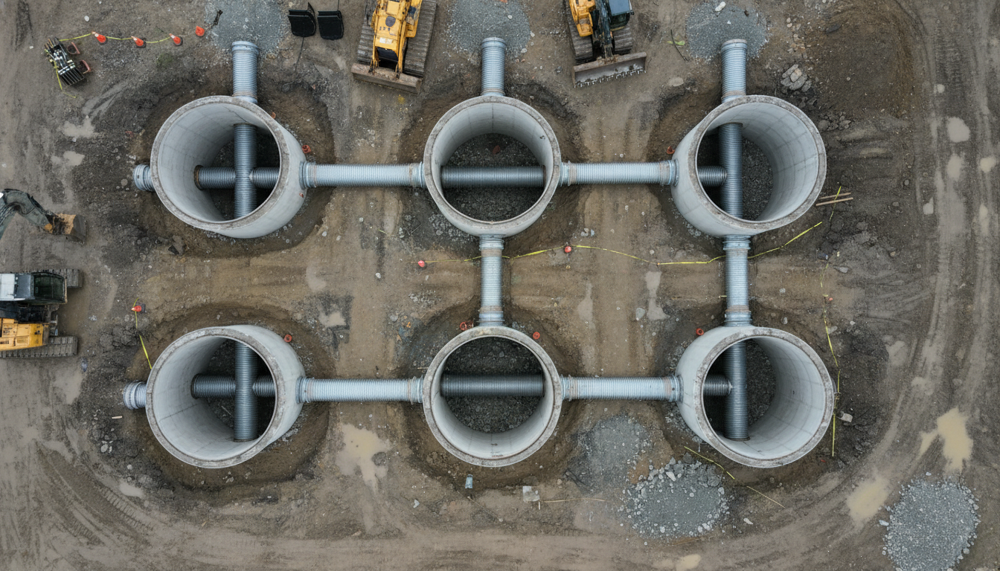
Элементы системы:
- Приёмные колодцы — собирают воду с поверхности через дождеприёмники
- Транзитные колодцы — соединяют участки трубопровода, доступ для обслуживания
- Смотровые колодцы — контроль состояния и очистка труб
- Накопительные колодцы — сбор воды перед сбросом в водоём или почву
| Площадь территории | Диаметр труб |
|---|---|
| Небольшие (частные дома, тротуары) | 110–160 мм |
| Средние (парковки, небольшие дороги) | 200–315 мм |
| Большие (магистрали, промзоны) | 400–600 мм |
| Диаметр труб | Расстояние между колодцами |
|---|---|
| До 200 мм | 30–50 м |
| 200–400 мм | 50–70 м |
| Более 400 мм | 70–100 м |
Рекомендуемый: 0,01–0,02 (1–2 см на 1 метр)
Уклон обеспечивает естественное движение воды под действием силы тяжести.
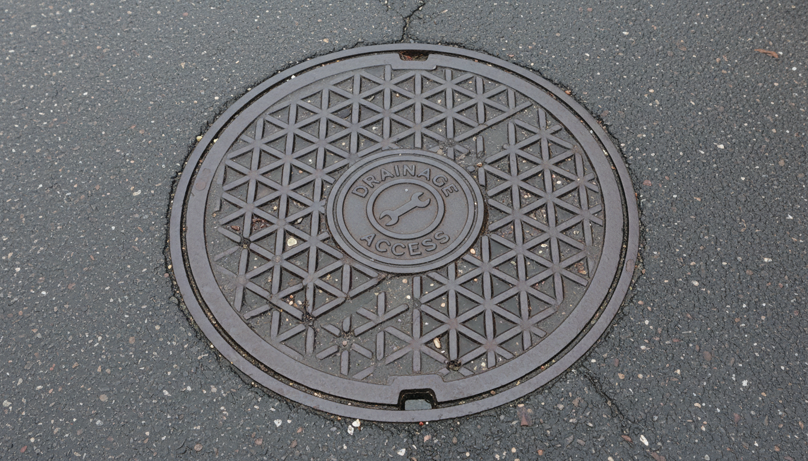
- Приёмный колодец — в начале системы (у входа на территорию)
- Транзитные колодцы — через каждые 30–50 метров
- Смотровой колодец — на каждом повороте трубопровода
- Накопительный колодец — в конце системы для сбора воды перед сбросом
| Преимущество | Описание |
|---|---|
| Прочность | Выдерживают большие нагрузки |
| Долговечность | Срок службы более 50 лет |
| Универсальность | Подходят для различных коммуникаций |
| Герметичность | Предотвращают протечки и загрязнение |
| Экономичность | Низкие затраты на обслуживание |
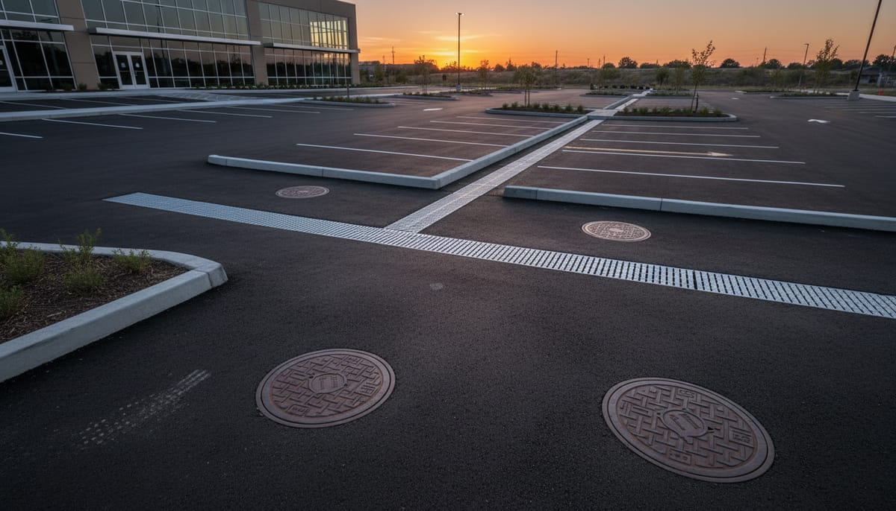
- Колодцы — обязательный элемент ливнёвки и дренажа
- Предлагайте ливнёвку как допуслугу к асфальтированию
- Без водоотвода покрытие разрушается в разы быстрее
- Срок службы бетонных колодцев — 50+ лет
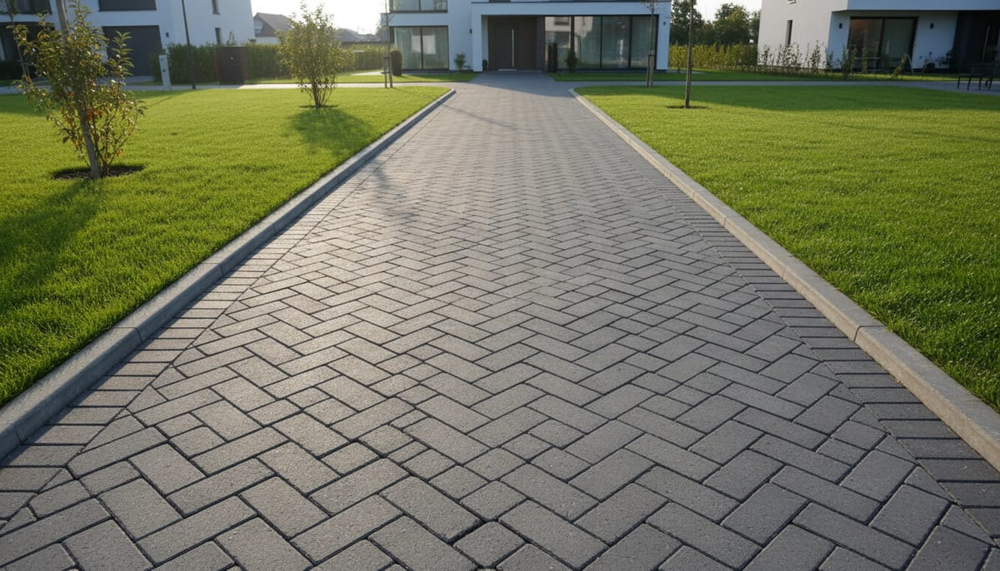
Укладка тротуарной плитки (брусчатки) — процесс, требующий внимания к деталям, понимания технологии и контроля качества. Правильно уложенная плитка служит десятилетиями и украшает территорию.
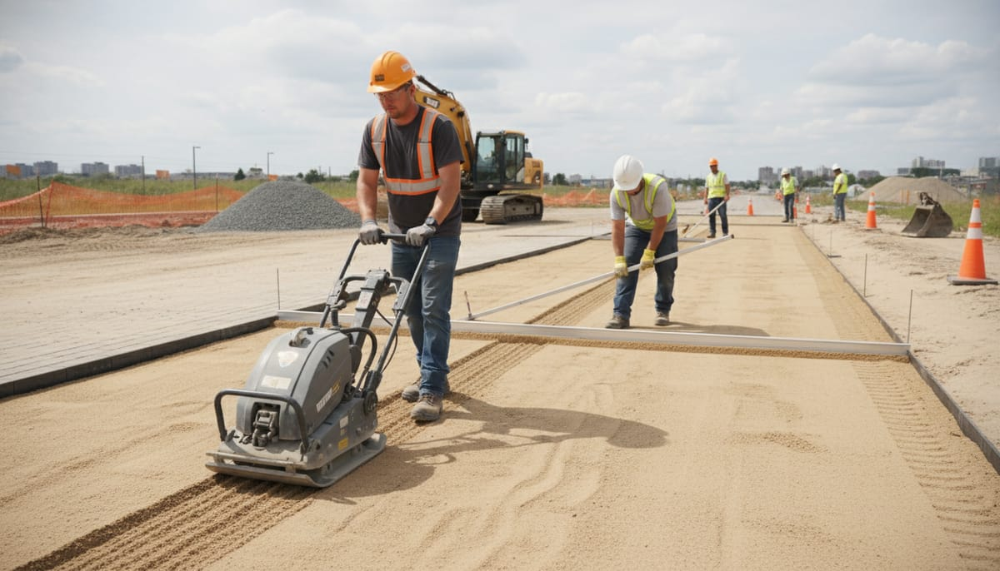
✔ Снятие верхнего слоя грунта на глубину 20–30 см
✔ Устройство дренажа: уклон или дренажная система
✔ Уплотнение грунта виброплитой
✔ Щебёночное основание (фр. 20–40 мм) толщиной 10–15 см
✔ Песчаная подушка 5–10 см — выравнивание, увлажнение
✔ Или пескоцемент для повышенной прочности
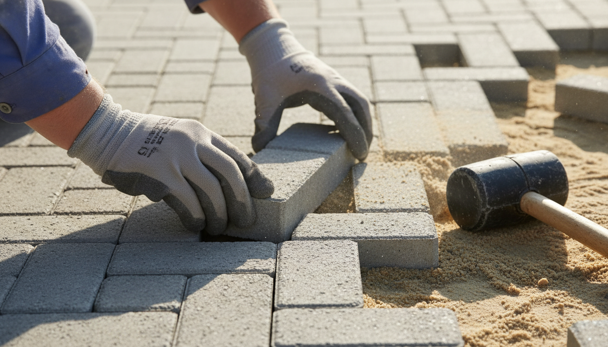
✔ Начинать с угла, двигаться «от себя»
✔ Выравнивание резиновым молотком, зазоры 2–5 мм
✔ Контроль ровности уровнем и правилом
✔ Уплотнение виброплитой с резиновой подошвой
✔ Повторное заполнение швов после уплотнения
1. Уплотнённый грунт
2. Щебень 5–10 см (фр. 20–40 мм) + геотекстиль
3. Песчаная подушка 3–5 см
4. Брусчатка 4–6 см
5. Швы: песок или ЦПС (1:5)
1. Уплотнённый грунт (выемка 30–40 см)
2. Геотекстиль (обязательно!)
3. Щебень 15–25 см с послойным уплотнением (каждые 5–7 см)
4. Песчано-цементная смесь 3–5 см (песок + 5–10% цемента)
5. Брусчатка 6–8 см
6. Швы: ЦПС (1:3)
1. Уплотнённый грунт (выемка 50–60 см)
2. Бетон М300 + армосетка 15–20 см, уклон 1–2%
3. Щебёночно-песчаная прослойка 5–10 см (фр. 5–10 мм)
4. Брусчатка 8–10 см
5. Швы: полимерный песок или ЦПС (1:2)
| Параметр | Тротуары | Парковки | Транспорт |
|---|---|---|---|
| Глубина выемки | 20–30 см | 30–40 см | 50–60 см |
| Основание | Щебень 10–15 см | Щебень 15–25 см | Бетон + щебень |
| Толщина плитки | 4–6 см | 6–8 см | 8–10 см |
| Швы | Песок | ЦПС | Полимерный песок |
| Тип работ | Скорость (бригада 4–5 чел.) |
|---|---|
| Стандартный рисунок (кирпич, ёлочка) | 40–60 м²/день |
| Сложные узоры, подрезка, неровный рельеф | 20–30 м²/день |
✔ Отсутствие просадок и трещин
✔ Правильное заполнение швов
✔ Уклон для отвода воды: 1–2 см на 1 м
❌ Тонкая плитка для парковки → трещины через сезон
❌ Нет дренажа → скопление воды, морозное пучение
❌ Неравномерное заполнение швов → расшатывание плитки
- Геотекстиль обязателен для парковок и транспортных зон
- Уклон 1–2% для отвода воды — критичен для всех покрытий
- Виброплита с резиновой подошвой — металлическая повредит плитку
- Морозостойкость F200+ — обязательно для российского климата
- Тонкая плитка (4 см) на парковке → трещины через сезон
- Всегда уточняйте нагрузку — от этого зависит «пирог» и цена
- Тротуар (4–6 см) ≠ парковка (6–8 см) ≠ грузовая зона (8–10 см)
- Предлагайте плитку как альтернативу асфальту для дворов и пешеходных зон
- Бригада 4–5 человек: 40–60 м²/день стандартной укладки
Основание — это фундамент асфальтового покрытия. От его качества зависит:
- Срок службы асфальта — неправильная подготовка ведёт к трещинам, просадкам, колейности
- Равномерность нагрузки — особенно важно для дорог с интенсивным движением
- Защита от воды — плохой дренаж разрушает асфальт из-за замерзания и эрозии
| Тип грунта | Особенности | Что делать |
|---|---|---|
| Глинистый | Склонен к пучению при замерзании | Замена или стабилизация |
| Песчаный | Хорошо дренирует | Уплотнение |
| Суглинок | Средние свойства | Добавление щебня |
Этапы уплотнения:
- Удаление растительности и мусора — корни, камни, мусор нарушают целостность
- Выравнивание — допустимый уклон до 2%
- Увлажнение — оптимальная влажность: песок 8–12%, глина 15–22%
- Уплотнение — катками (10–20 т) для больших площадей, виброплитами (до 1 т) для узких участков
Автомобильные дороги: 0,98–1,0
Контроль: плотность — динамическим зондом. Ровность — нивелиром (допуск до 5 мм на 3 м).
- Песчаная подушка (10–15 см)
- Геотекстиль (разделяет песок и щебень)
- Щебёночные слои (фракции под нагрузку)
Требования к песку:
✔ Крупнозернистый (модуль крупности ≥ 2,5)
✔ Содержание глины < 3% (ГОСТ 8736-2014)
Технология: увлажнение → уплотнение виброплитой/катком до коэффициента 0,95–0,98.
Контроль: влажность 8–12%, испытание песчаным конусом (ГОСТ 28514-90).
✔ Усиливает основание (распределяет нагрузку)
✔ Защищает от прорастания корней
Укладка: внахлёст 10–15 см, края фиксируют анкерами.
Плотность: 150–200 г/м² (пешеходные) / 300–400 г/м² (дороги, парковки).
| Нагрузка | Нижний слой | Верхний слой | Расклинцовка |
|---|---|---|---|
| Грузовые магистрали | Фр. 40–70 мм (20–30 см) | Фр. 20–40 мм (10–15 см) | Фр. 5–20 мм или крошка |
| Парковки, легковые | Фр. 20–40 мм (15–25 см) | Фр. 5–20 мм или крошка | |
| Пешеходные зоны | Фр. 5–20 мм (10–15 см) | Не требуется | |
| Тип щебня | Марка | Применение | Морозостойкость |
|---|---|---|---|
| Гранитный | М1200–М1400 | Магистрали, логистика | F300–F400 |
| Известняковый | М600–М800 | Тротуары, парковки | F100–F150 |
| Асфальтная крошка | Вторичный | Расклинцовка (дешевле) | — |
| Тип нагрузки | Общая толщина | Структура слоёв |
|---|---|---|
| Пешеходные дорожки | 10–15 см | Песок 10 см + геотекстиль + щебень 5–20 мм |
| Легковые парковки | 25–35 см | Песок 15–20 см + геотекстиль + щебень 20–40 мм (15 см) + расклинцовка |
| Грузовые магистрали | 50–80 см | Песок 20–30 см + геотекстиль + щебень 40–70 мм (30 см) + расклинцовка + щебень 20–40 мм (15 см) |
Цель: отвести воду от основания, избежать размытия и промерзания.
Типы дренажных систем:
- Поверхностный — уклоны и ливневые лотки
- Глубинный — перфорированные трубы в щебёночной обсыпке
Тест на водопроницаемость: 10 л воды на 1 м² — должна уйти за 5–10 минут
Ошибки:
❌ Неправильный уклон → вода скапливается под асфальтом
❌ Нет дренажных труб при высоких грунтовых водах
Бетонное основание — прочная и долговечная база для асфальтового покрытия, особенно в местах с высокими нагрузками: промышленные площадки, мосты, автостоянки.
Два основных типа:
- Жидкий бетон с армированием — сеткой или арматурой
- Тощий бетон — жёсткоукатываемый
Шаг 1: Подготовка основания
- Очистка площадки — удаление мусора, растительности, верхнего слоя грунта
- Установка опалубки по периметру (деревянная или металлическая)
- Песчано-гравийная подушка 10–15 см, уплотнение виброплитой до ≥97%
Шаг 2: Армирование
- Укладка металлической сетки или арматуры ∅8–12 мм
- Арматура на фиксаторах — 3–5 см от поверхности
- Связывание проволокой или сварка в единую конструкцию
Заливка: равномерно по всей площади
Вибрирование: вибратором или виброрейкой для удаления воздуха
Выравнивание: правилом или виброрейкой
Укрытие: полиэтиленовой плёнкой для сохранения влаги
Полное затвердевание: через 28 дней
Асфальт можно класть: через 7–14 дней (при наборе ≥70% прочности)
Тощий бетон — экономичный вариант основания с меньшим содержанием цемента и большей жёсткостью. Для умеренных нагрузок.
Пропорции: 1 цемент : 4–6 щебня : 2–3 песка, В/Ц = 0,4–0,5
Распределение: равномерно по площади
Уплотнение: виброплитой или катком 8–10 тонн
Выравнивание: виброрейкой или катком
Полное затвердевание: через 7–14 дней
Асфальт можно класть: через 3–7 дней
| Критерий | Жидкий бетон + армирование | Тощий бетон |
|---|---|---|
| Прочность | Высокая (армирование) | Умеренная |
| Нагрузки | Промплощадки, мосты, тяжёлый транспорт | Дороги, парковки |
| Марка бетона | М200–М300 | М100–М150 |
| Стоимость | Выше | Ниже |
| Технология | Заливка + опалубка + арматура | Распределение + укатка |
| До укладки асфальта | 7–14 дней | 3–7 дней |
- Жидкий бетон + арматура — для тяжёлых нагрузок (промзоны, мосты)
- Тощий бетон — экономичный вариант для парковок и дорог
- Полное затвердевание: 7–28 дней — учитывайте это в сроках проекта
- Бетонное основание = максимальный срок службы покрытия
Каждый слой дорожной конструкции выполняет свою функцию:
| Слой | Функция | Зависит от |
|---|---|---|
| Песок | Подушка для выравнивания и дренажа | Тип грунта и нагрузка |
| Геотекстиль | Разделение слоёв, предотвращение смешивания | Нагрузка (плотность растёт) |
| Щебень | Прочное основание | Нагрузка (толщина и фракция) |
| Асфальтобетон | Верхний слой покрытия | Нагрузка (кол-во слоёв) |
Парковки легковых: 300–350 г/м²
Грузовые парковки / склады: 400–450 г/м²
Грузовые: 8–12 см (2 слоя)
Склады, промплощадки: 10–15 см (2–3 слоя)
Парковки легковых: ручная допустима до 100 м²
Большие площади: асфальтоукладчик + тяжёлые катки >10 тонн
1. Песок (10 см): 1,5 × 50 × 0,1 = 7,5 м³
2. Щебень фр. 20–40 мм (10 см): 1,5 × 50 × 0,1 = 7,5 м³
3. Геотекстиль 200–250 г/м²: 1,5 × 50 = 75 м²
4. Асфальт (5 см, 1 слой): 1,5 × 50 × 0,05 = 3,75 м³
Укладка: ручная (площадь небольшая)
1. Песок (15 см): 20 × 30 × 0,15 = 90 м³
2. Щебень фр. 20–40 мм (15 см): 20 × 30 × 0,15 = 90 м³
3. Геотекстиль 300–350 г/м²: 20 × 30 = 600 м²
4. Асфальт (7 см, 2 слоя: 4+3 см): 20 × 30 × 0,07 = 42 м³
Укладка: асфальтоукладчиком (площадь большая)
1. Песок (20 см): 30 × 40 × 0,2 = 240 м³
2. Щебень фр. 40–70 мм (20 см): 30 × 40 × 0,2 = 240 м³
3. Геотекстиль 400–450 г/м²: 30 × 40 = 1 200 м²
4. Асфальт (10 см, 2 слоя: 6+4 см): 30 × 40 × 0,1 = 120 м³
Укладка: асфальтоукладчик + тяжёлый каток >10 тонн
1. Песок (25 см): 50 × 50 × 0,25 = 625 м³
2. Щебень фр. 40–70 мм (25 см): 50 × 50 × 0,25 = 625 м³
3. Геотекстиль 400–450 г/м²: 50 × 50 = 2 500 м²
4. Асфальт (15 см, 3 слоя: 6+5+4 см): 50 × 50 × 0,15 = 375 м³
Укладка: асфальтоукладчик + тяжёлый каток >10 тонн
| Объект | Песок | Щебень | Геотекстиль | Асфальт | Укладка |
|---|---|---|---|---|---|
| Тротуар | 10 см | 10 см, фр. 20–40 | 200–250 г/м² | 5 см (1 сл.) | Ручная |
| Парковка легк. | 15 см | 15 см, фр. 20–40 | 300–350 г/м² | 7 см (2 сл.) | Укладчик |
| Парковка груз. | 20 см | 20 см, фр. 40–70 | 400–450 г/м² | 10 см (2 сл.) | Укладчик + каток |
| Склад | 25 см | 25 см, фр. 40–70 | 400–450 г/м² | 15 см (3 сл.) | Укладчик + каток |
- Всегда уточняйте нагрузку — от неё зависит весь «пирог» и цена
- Формула расчёта: Длина × Ширина × Толщина слоя = Объём материала
- Чем выше нагрузка — тем толще слои, крупнее фракция, плотнее геотекстиль
- Эти расчёты помогают быстро дать клиенту предварительную оценку
Ливневые лотки — открытые каналы для сбора и отвода дождевых и талых вод с поверхности покрытия. Часть открытой или комбинированной системы ливневой канализации.
Основные функции:
- Сбор воды с поверхности асфальта, бетона или тротуарной плитки
- Отвод воды к дренажным трубам, колодцам или накопительным резервуарам
- Защита дорожного покрытия от разрушения
| Материал | Преимущества | Применение |
|---|---|---|
| Бетонные | Прочные, долговечные | Дороги с высокой нагрузкой |
| Полимербетонные | Лёгкие, устойчивы к коррозии и химии | Автодороги, пешеходные зоны |
| Пластиковые | Лёгкие, недорогие | Частные территории, сады |
| Металлические | Оцинкованная / нержавеющая сталь | Промышленные зоны |
По форме:
- Прямоугольные — универсальные, для большинства задач
- U-образные — лучший поток воды
- V-образные — для небольших объёмов воды
Стандартные размеры:
- Ширина: 100–500 мм
- Глубина: 100–300 мм
- Длина: стандарт 1 м (под заказ — другие)
| Место установки | Размер лотка | Класс нагрузки |
|---|---|---|
| Пешеходные зоны | 100×100 мм | A15 (до 1,5 т) |
| Парковки | 200×200 мм | B125 (до 12,5 т) |
| Автодороги | 300×300 мм | C250 (до 25 т) |
| Промышленные зоны | 400×400 мм | D400 (до 40 т) |
Этапы монтажа:
- Подготовка основания — траншея по разметке, бетонная подушка для фиксации
- Монтаж лотков — установка в траншею с соблюдением уклона, стыковка элементов
- Установка решёток — подбор по классу нагрузки, фиксация
- Засыпка и уплотнение — пространство вокруг лотка засыпается и уплотняется
- Укладка асфальта — покрытие подводится вплотную к решётке
| Преимущество | Описание |
|---|---|
| Эффективность | Быстро отводят воду с поверхности |
| Долговечность | Современные материалы обеспечивают длительный срок службы |
| Универсальность | Подходят для любых типов объектов |
| Простота обслуживания | Легко очищаются от мусора — снял решётку, прочистил |
- Лотки — обязательный элемент водоотвода при благоустройстве
- Всегда уточняйте нагрузку — от неё зависит класс лотка и решётки
- Предлагайте лотки в комплекте с асфальтированием
- Без водоотвода покрытие разрушается в разы быстрее
Когда стандартный горячий асфальт не подходит — на помощь приходят специальные виды: литой асфальт и холодный асфальт. Они используются в особых условиях: зимний ремонт, экстренные заделки, сложные формы дефектов.
Литой асфальт — смесь, которая остаётся жидкой при высокой температуре (180–240°C) и заливается на место укладки из специального оборудования (Кохера).
2. Заливка: литой асфальт из Кохера выгружается в яму или трещину.
3. Остывание: после остывания затвердевает и образует ровную поверхность.
Уплотнение не требуется!
| Преимущества | Недостатки |
|---|---|
| ✔ Можно использовать зимой | ❌ Временное решение |
| ✔ Быстрое выполнение работ | ❌ Летом может плавиться |
| ✔ Заполняет сложные формы дефектов | ❌ Не подходит для больших площадей |
Холодный асфальт — готовая смесь в мешках, используется сразу после вскрытия. Для экстренного ремонта при низких температурах.
1. Подготовка: очистка ямы от грязи и воды.
2. Укладка: высыпать из мешка, утрамбовать вручную или виброплитой.
3. Финиш: выровнять лопатой, можно посыпать песком для сцепления.
Срок хранения: 6–12 месяцев в закрытом виде.
| Преимущества | Недостатки |
|---|---|
| ✔ Простота — укладка вручную | ❌ Менее прочный, чем горячий |
| ✔ Работа при минусовых температурах | ❌ Не подходит для больших площадей |
| ✔ Долгий срок хранения (6–12 мес.) | ❌ Замена через 1–2 года |
| Критерий | Литой асфальт | Холодный асфальт |
|---|---|---|
| Температура укладки | 180–240°C | +5°C до -10°C |
| Прочность | Временное решение | Менее прочный, чем горячий |
| Применение | Ямы, трещины, временный ремонт | Ямы, трещины, экстренный ремонт |
| Техника | Специальные машины (Кохер) | Ручная укладка |
| Срок службы | До следующего сезона | 1–2 года |
- Литой асфальт — заливка из Кохера при 180–240°C, зимний ремонт, временное решение
- Холодный асфальт — из мешка, вручную, при минусовых температурах, до 2 лет
- Оба варианта — не замена горячему асфальту, а экстренное решение
- Предлагайте как первый этап + капитальный ремонт весной = две продажи
Внутри сделки в PlanFix ты найдёшь виджеты — панели справа, которые помогают в работе. Каждый виджет отвечает за свою функцию: детали, подзадачи, документы, контакты и многое другое.
✔ Контрагент, статус, дата, ответственный
✔ Кастомные поля (чек-листы, итог звонка и др.)
✔ Вид отображения можно настроить через меню
Что можно делать:
- Быстро создать подзадачу — просто введи название в строку
- Фильтровать — клик на заголовок панели
- Сортировать — по дате, приоритету, статусу
- Массовые операции — выделить несколько → «Изменить...»
- Распечатать список подзадач
Что можно делать:
- Добавить новые файлы
- Сортировать по дате, имени, типу
- Удалить или изменить доступ (массово)
- Добавить новую версию файла или переименовать
✔ Запланированные — ещё не отправленные
✔ Отправленные — уже сработавшие
Можно отредактировать время или удалить напоминание.
✔ Получать уведомления обо всех действиях
✔ Задать особые настройки уведомлений
✔ Отключить уведомления по этой сделке
1. Открой сделку → Детали → заполни все поля
2. Подзадачи → создай задачу на следующее действие (перезвон, КП, выезд)
3. Документы → прикрепи КП, счёт, фото
4. Напоминания → поставь на дату перезвона
5. В комментарии → запиши итог звонка (что обсудили, что решили)
Это займёт 2 минуты, но сэкономит часы потом.
- Детали — вся информация о сделке, заполняй сразу
- Подзадачи — конкретные действия, создавай после каждого звонка
- Документы — КП, счета, фото, договоры
- Напоминания — не забывай перезвонить
- Лог — полная история, всё записано
Щебень — один из ключевых материалов в дорожном строительстве. Обеспечивает прочность, устойчивость и долговечность дорожных покрытий.
Применяется для:
- Создания оснований и подоснований дорог.
- Укрепления земляного полотна.
- Приготовления асфальтобетонных и бетонных смесей.
- Устройства дренажных систем.
- Укрепления откосов, насыпей, мостов и тоннелей.
- Добыча породы — плотные горные породы: гранит, базальт, известняк.
- Дробление — порода измельчается на дробильных установках.
- Сортировка — разделение на фракции (ситовой анализ).
- Очистка — удаление пыли и глинистых включений.
| Вид | Породы | Прочность | Применение |
|---|---|---|---|
| Гранитный | Гранит, базальт (магматические) | Высокая (М1200) | Ответственные конструкции, дороги с высокой нагрузкой |
| Гравийный | Горные породы (метаморфические) | Средняя (М800) | Большинство дорог и оснований |
| Известняковый | Известняк, доломит (осадочные) | Низкая (М600) | Местные дороги, менее нагруженные объекты |
| Вторичный | Переработанный бетон, кирпич | Низкая | Временные дороги, отсыпка, экономичный вариант |
| Фракция | Размер (мм) | Применение |
|---|---|---|
| Мелкая | 5–20 | Верхние слои асфальтобетона, асфальт в смесях |
| Средняя | 20–40 | Основание дорог, ремонт, дренаж |
| Крупная | 40–70 | Нижние слои основания, укрепление насыпей |
| Универсальная | 0–40 (С1, С5) | Различные типы покрытий и подушек |
| Характеристика | Описание | Норма |
|---|---|---|
| Плотность | Вес на единицу объёма | 1200–1600 кг/м³ |
| Лещадность | % плоских и игольчатых частиц | До 15% (хорошее сцепление) |
| Морозостойкость | Циклы замораживания-оттаивания | F50–F400 |
| Влагопоглощение | Способность впитывать воду | Как можно ниже |
| Марка М600 | Средняя прочность | Дороги с умеренной нагрузкой |
| Марка М800 | Высокая прочность | Трассы с интенсивным движением |
| Марка М1200 | Максимальная прочность | Мосты, тоннели, аэродромы |
| Применение | Фракция | Примечание |
|---|---|---|
| Земляное полотно | 40–70 мм (низ), 20–40 мм (верх) | Устойчивое основание |
| Асфальтобетонные смеси | 5–20 мм | Гранитный — для высоких нагрузок |
| Дренажные системы | 20–40 мм, 40–70 мм | Отвод воды от полотна |
| Откосы и насыпи | Крупный | Защита от эрозии |
| Мосты и тоннели | М1200 | Фундаменты, опоры |
| Вид щебня | Удельный вес (кг/м³) |
|---|---|
| Гранитный | 1400–1600 |
| Гравийный | 1300–1500 |
| Известняковый | 1200–1400 |
Формулы расчёта:
- Масса (кг) = Объём (м³) × Удельный вес (кг/м³)
- Объём (м³) = Масса (кг) ÷ Удельный вес (кг/м³)
Пример: для 5 м³ гранитного щебня (плотность 1500 кг/м³):
Масса = 5 × 1500 = 7500 кг (7,5 тонны)
Дорожная разметка — ключевой элемент безопасности и организации движения. Менеджеру важно понимать особенности материалов, методов нанесения и демонтажа, чтобы эффективно планировать проекты, оптимизировать затраты и сроки.
| Материал | Срок службы | Стоимость | Применение |
|---|---|---|---|
| Краска | 1–2 года | Низкая | Временная разметка, парковки, пешеходные переходы |
| Холодный пластик | 3–5 лет | Средняя | Городские дороги, перекрёстки |
| Горячий пластик | 5–7 лет | Высокая | Магистрали, участки с высокой нагрузкой |
Нанесение: воздушный распылитель или валик, 1–2 слоя (толщина 0,3–0,5 мм). Сразу — стеклошарики для светоотражения.
Сушка: 10–30 мин при +5°C…+40°C.
Нанесение: экструдер или аппликатор, толщина 1,5–3 мм. Трафареты для стрелок и символов.
Охлаждение: застывает за 3–5 мин при температуре воздуха выше +10°C.
Нанесение: шпатель или распылитель, толщина 1–2 мм. Без нагрева — при +5°C…+35°C.
Отверждение: 15–40 мин; полная готовность — через 1–2 часа.
| Метод | Оборудование | Применение | Плюсы / минусы |
|---|---|---|---|
| Ручной | Аппликаторы, трафареты, ручные распылители | Мелкий ремонт, стрелки, ограниченные участки | + Мобильность, низкие затраты − Медленно, риск ошибки |
| Машинный | Самоходные маркировочные машины с GPS | Линии на магистралях, большие площади | + Высокая точность и скорость − Дорого, требует подготовки трассы |
| Метод | Инструмент | Применение | Плюсы / минусы |
|---|---|---|---|
| Механический | Шлифмашины, фрезы | Толстые слои пластика, бетонные покрытия | + Быстро − Риск повреждения полотна, шум |
| Химический | Специальные растворители | Краска, тонкие слои пластика | + Щадит покрытие − Долго, экологические риски |
| Термический | Горелки, нагревательные плиты | Термопластик, толстые слои | + Эффективен − Дорого, риск деформации асфальта |
- Краска — для временных объектов или низкобюджетных проектов.
- Холодный пластик — оптимален для городских дорог с умеренной нагрузкой.
- Горячий пластик — на скоростных трассах и объектах с высокой нагрузкой.
- Для демонтажа на исторических покрытиях — химический метод; на прочных — механический.
Простыми словами — это композитный материал, в котором:
| Компонент | Доля | Роль |
|---|---|---|
| Щебень | 80–85% (с песком и порошком) | Создаёт «скелет» смеси, обеспечивает прочность |
| Песок | в составе каменной части | Заполняет пустоты между щебнем |
| Минеральный порошок | в составе каменной части | Мелкие частицы (как мука), улучшают адгезию битума |
| Битум | 5–7% | Вяжущее — скрепляет все компоненты |
| Добавки | 0,5–2% | Полимеры, стабилизаторы — повышают морозостойкость и эластичность |
Состав: щебень до 70%, битум 6–7%, стабилизаторы (целлюлоза, полимеры).
Применение: верхний слой дорог с высокой нагрузкой — магистрали, аэропорты. Устойчив к колейности, воде, деформациям.
Типы:
- ЩМА-15 (щебень до 15 мм) — для городских дорог.
- ЩМА-20 (щебень до 20 мм) — для магистралей и тяжёлых нагрузок.
| Параметр | Значение |
|---|---|
| Температура при укладке | 130–160°C |
| Толщина слоя | 4–10 см |
| Уплотнение | Тяжёлые катки 10–16 т с вибрацией, 6–8 проходов |
| Допуск по толщине | ±3 мм |
| Допуск по ровности | 3 мм на 3 метра |
Состав: щебень крупной фракции 20–40 мм (50–65%), песок, минеральный порошок, битум.
Применение: нижний слой дорожного покрытия, основание для верхнего слоя асфальта.
| Параметр | Значение |
|---|---|
| Температура при укладке | 120–140°C (не ниже 110°C перед уплотнением) |
| Толщина слоя | 6–8 см |
| Уплотнение | Тяжёлые катки 10–16 т с вибрацией, 6–8 проходов |
| Допуск по толщине | ±5 мм |
| Допуск по ровности | 5 мм на 3 метра |
Мелкозернистые смеси:
- Фракция щебня: 5–20 мм.
- Применение: верхний слой дорог, тротуары, парковки.
- Укладка: асфальтоукладчик (крупные объекты) или ручная (ремонт, узкие дорожки).
- Температура: 110–130°C. Уплотнение: лёгкими катками или виброплитами.
Песчаные смеси:
- Фракция: до 5 мм.
- Применение: тротуары, велодорожки, детские площадки.
- Укладка: ручная или малые асфальтоукладчики.
- Температура: 100–120°C. Уплотнение: виброплиты или лёгкие катки 1,5–4 т.
| Смесь | Фракция | Слой | Укладка | Где применяется |
|---|---|---|---|---|
| ЩМА-15/20 | до 15–20 мм | Верхний | Только укладчик | Магистрали, аэропорты |
| Крупнозернистая | 20–40 мм | Нижний | Только укладчик | Основание покрытия |
| Мелкозернистая | 5–20 мм | Верхний | Укладчик или ручная | Дороги, тротуары, парковки |
| Песчаная | до 5 мм | Верхний | Ручная или малый укладчик | Тротуары, велодорожки, детские площадки |
Решение: ЩМА-20 с полимерными добавками.
Аргумент: «ЩМА выдерживает нагрузки фур и не деформируется даже при +40°C. Один раз сделаете правильно — и забудете о ремонте на 10–15 лет.»
Решение: Песчаная смесь с добавлением пигментов.
Аргумент: «Цветной асфальт не выцветает, безопасен для велосипедистов и стоит дешевле брусчатки. Выглядит современно.»
Дорожные плиты — железобетонные изделия для устройства временных или постоянных покрытий дорог, подъездных путей, строительных площадок и других объектов с высокими нагрузками. Отличаются прочностью, долговечностью и универсальностью.
| Тип | Размеры (м) | Нагрузка | Применение |
|---|---|---|---|
| 3×1,75×0,17 | 3 × 1,75 × 0,17 | До ~10 т | Временные дороги, подъезды к стройплощадкам, лёгкий транспорт |
| ПАГ-14 | 6 × 2 × 0,14 | До 14 т | Дороги с умеренными нагрузками, легковой и грузовой транспорт |
| ПАГ-18 | 6 × 2 × 0,18 | До 18 т | Тяжёлый транспорт, промышленные площадки, взлётно-посадочные полосы |
Чем отличаются:
- Толщина — чем толще, тем выше несущая способность. ПАГ-18 выдерживает самые тяжёлые нагрузки.
- Размер — плиты 3×1,75 компактнее, проще в транспортировке. ПАГ требуют крана.
- Нагрузка — 3×1,75 для лёгкого транспорта, ПАГ-14 для среднего, ПАГ-18 для тяжёлого.
Бортовые грузовики («шаланды»):
- Плиты доставляются на бортовых грузовиках с открытым кузовом.
- Для погрузки/разгрузки нужен кран или манипулятор.
Манипуляторы:
- Сочетают функции крана и грузовика — привезли и сразу уложили.
- Удобны для малых объектов и плит 3×1,75×0,17.
Под плиты укладывается песчано-гравийная подушка:
- Для плит 3×1,75×0,17 — толщина 10–15 см.
- Для ПАГ-14 и ПАГ-18 — толщина 15–20 см.
Слои подушки: нижний — песок (выравнивание), верхний — щебень (уплотнение).
| Этап | Действие |
|---|---|
| 1. Очистка | Удалить растительность, мусор, верхний слой грунта |
| 2. Устройство подушки | Уложить ПГС, уплотнить виброплитой или катком до ≥97% |
| 3. Выравнивание | Поверхность ровная, без ям и бугров |
Чем укладывают:
- Кран — для ПАГ-14 и ПАГ-18. Поднимает плиту за монтажные петли.
- Манипулятор — удобен для плит 3×1,75 и небольших объектов.
Технология укладки:
- Проверить целостность плит и наличие монтажных петель.
- Уложить плиты вплотную, зазор не более 1–2 см.
- Сварить арматуру между плитами (или анкерное соединение).
- Заполнить швы песчано-цементной смесью или битумной мастикой.
| Преимущества | Ограничения |
|---|---|
| ✔ Высокая прочность и долговечность | ✘ Выше стоимость, чем у асфальта |
| ✔ Быстрая укладка (1–2 дня) | ✘ Нужна спецтехника (кран/манипулятор) |
| ✔ Многократное использование | ✘ Ограниченная эстетичность |
| ✔ Можно демонтировать и перенести | ✘ Швы требуют периодической заделки |
Перед началом работ необходимо провести геодезическое исследование для определения типа грунта, уровня грунтовых вод (УГВ) и степени увлажнения основания.
Если грунт насыщен водой (глинистые или суглинистые почвы с низкой водопроницаемостью) — это приведёт к деформациям покрытия, просадкам и снижению несущей способности.
Как проверять:
- Зондирование или ручные шурфы для определения УГВ.
- Тесты на влажность грунта (метод высушивания образца).
- Оценка коэффициента фильтрации с помощью лабораторных испытаний.
Если основание переувлажнено, применяются следующие технологии:
▸ Глубина траншей — ниже уровня промерзания грунта (1,5–2 м)
▸ Уклон — 2 мм/м
После осушения важно обеспечить стабильность грунта:
- Удаление слабых слоёв: снять верхний растительный слой и грунт с низкой несущей способностью (торф, илы).
- Уплотнение: вибрационные катки или трамбовки до плотности не менее 95% от максимальной (по ГОСТ 17.4.02-85).
- Дренирующие слои: уложить песчано-гравийную смесь (ПГС) толщиной 15–20 см — улучшает дренаж и распределяет нагрузку.
| Что контролировать | Метод | Норматив |
|---|---|---|
| Влажность грунта | Полевые влагомеры | Для глины — 15–20% |
| Плотность уплотнения | Тест Проктора, динамическое зондирование | ≥95% от максимальной |
| Работа дренажа | Контрольные колодцы | Вода уходит без задержек |
Пренебрежение дренажом приведёт к:
- Просадкам и трещинам в дорожном покрытии.
- Затоплению основания в сезон дождей.
- Сокращению срока службы дороги в 2–3 раза.
Для сложных случаев (мягкие грунты, высокий УГВ) рассмотрите сифонный дренаж или применение геосинтетических материалов (георешётки, геомембраны).
Песок — один из ключевых материалов в дорожном строительстве. Его уникальные свойства делают его незаменимым для создания прочных, долговечных и устойчивых дорожных конструкций.
- Равномерно распределяет нагрузку — передача давления между песчинками предотвращает локальные деформации и увеличивает срок службы покрытия.
- Не пучинится — не расширяется при замерзании, что особенно важно в регионах с холодным климатом.
- Высокая дренирующая способность — предотвращает накопление воды и разрушение дорожного полотна.
- Прочность зависит от толщины — чем толще слой песка, тем лучше распределяется нагрузка и ниже риск просадок.
По происхождению:
Природный:
- Речной/озёрный — чистый, с округлыми зёрнами. Лучший для дорожных работ.
- Карьерный — может содержать примеси; делится на мытый (очищенный) и сеяный (просеянный).
- Эоловый, аллювиальный, делювиальный — по месту отложения.
Искусственный:
- Кварцевый — чистый, для промышленных смесей.
- Керамзитовый, перлитовый, шлаковый.
- Дроблёный — из горных пород, высокая угловатость зёрен.
По ГОСТ 8736:
- Класс I: повышенной крупности, крупный, средний, мелкий.
- Класс II: добавляются очень мелкий, тонкий, очень тонкий.
| Группа песка | Размер частиц (мм) | Модуль крупности (Мк) | Применение |
|---|---|---|---|
| Повышенной крупности | 3,0–3,5 | До 3,5 | Основание дорог, дренаж |
| Крупный | 0,5–5 | 2,5–3,0 | Уплотнение, асфальтобетон |
| Средний | 0,25–0,5 | 2,0–2,5 | Бетонные смеси, земляное полотно |
| Мелкий | 0,1–0,25 | 1,5–2,0 | Заполнение пустот, подсыпка |
| Пылеватый | <0,1 | <1,5 | Ограниченно — низкая прочность |
- Насыпная плотность: 1500–1600 кг/м³.
- Влажность: 8–12%. Превышение ведёт к плохому уплотнению.
- Примеси:
- Глина: ≤3% — допустимо.
- Органика: ≤10%.
- Торф >60% — непригоден для строительства.
- Радиационная безопасность:
- ≤370 Бк/кг — для жилых зданий.
- ≤740 Бк/кг — для дорог в населённых пунктах.
- ≤1500 Бк/кг — для дорог вне населённых пунктов.
| Где применяется | Какой песок | Зачем |
|---|---|---|
| Земляное полотно | Средней крупности | Устойчивость основания |
| Асфальтобетон | Речной или кварцевый (чистый) | Компонент смеси без примесей |
| Дренажный слой | Крупный | Отвод грунтовых и поверхностных вод |
| Работа в воде | Крупные фракции | Предотвращение размыва |
| Подсыпка под бордюры и плитку | Мелкий/средний | Выравнивающий слой |
- Равномерное распределение нагрузки — предотвращает локальные деформации, увеличивает срок службы покрытия.
- Отсутствие пучения — не расширяется при замерзании, идеален для холодного климата.
- Дренирующая способность — хорошо пропускает воду, предотвращая её накопление и разрушение полотна.
- Прочность основания — чем толще слой песка, тем лучше распределяется нагрузка.
- Универсальность — применяется в различных слоях дорожной конструкции — от основания до асфальтобетонной смеси.
Лабораторные тесты:
- Фракционный состав (ситовой анализ).
- Содержание глины и органики.
- Проверка влажности.
Документация: Сертификат с указанием класса, модуля крупности (Мк), содержания примесей и уровня радиации.
Характеристика: Самоходная машина с гусеничным или колёсным ходом, оснащённая бункером для приёма асфальтобетонной смеси и плитой для её распределения.
Назначение: Укладка асфальтобетонной смеси на подготовленное основание с заданной толщиной и ровностью.
Особенности: Может быть оснащён системой автоматического нивелирования для точной укладки — это особенно важно на объектах с высокими требованиями к ровности (парковки, дороги высшей категории).
Характеристика: Машины с вальцами (гладкими или кулачковыми) для уплотнения грунта, щебня или асфальта.
Виды катков по назначению:
- Лёгкие катки (до 6 тонн) — уплотнение верхних слоёв грунта, пешеходных дорожек, тротуаров.
- Тяжёлые катки (до 15 тонн) — уплотнение оснований дорог и асфальтового покрытия.
Особенности: Кулачковые катки используются для уплотнения рыхлых грунтов, гладкие — для асфальта. Вибрационный режим усиливает уплотнение без увеличения массы машины.
Характеристика: Универсальная машина с ковшом спереди и экскаваторной стрелой сзади.
Назначение:
- Земляные работы (рытьё котлованов, траншей).
- Погрузка сыпучих материалов (песок, щебень).
- С гидромолотом: разрушение твёрдых покрытий (асфальт, бетон), дробление камней.
Характеристика: Машина с поворотной платформой на 360°, оснащённая ковшом или навесным оборудованием (гидромолот, фреза).
Назначение:
- Рытьё котлованов, траншей большого объёма.
- Планировка участков.
- Демонтаж конструкций с использованием гидромолота.
Характеристика: Самоходная машина с вращающимся барабаном, оснащённым резцами.
Назначение:
- Снятие старого асфальтового покрытия (фрезерование).
- Выравнивание основания дороги.
- Подготовка поверхности для укладки нового слоя асфальта.
Характеристика: Грузовые автомобили с кузовом для перевозки сыпучих материалов.
Назначение:
- Транспортировка грунта, щебня, песка, асфальтобетонной смеси.
- Вывоз строительного мусора.
Особенности: Грузоподъёмность варьируется от 10 до 40 тонн. Для горячего асфальта важна скорость доставки — смесь должна прийти к укладчику с нужной температурой.
Характеристика: Машина с баком для битумной эмульсии и системой распыления.
Назначение:
- Обработка основания дороги битумной эмульсией для улучшения сцепления слоёв (подгрунтовка).
- Ремонт дорожного покрытия (ямочный ремонт — пропитка зон ремонта).
| Техника | Описание | Применение |
|---|---|---|
| Бульдозер | Гусеничная машина с отвалом | Планировка грунта, снятие верхнего слоя, перемещение сыпучих материалов |
| Грейдер | Машина с длинным отвалом | Выравнивание грунта, создание профиля дороги, профилировка обочин |
| Автогудронатор | Машина для транспортировки и распределения битума | Обработка дорожного полотна битумом перед укладкой асфальта |
| Виброплита | Компактное оборудование для уплотнения | Уплотнение в труднодоступных местах: тротуары, узкие участки, зоны у бордюров |
Понимание техники помогает менеджеру:
- Объяснять этапы работ — клиент видит, что вы разбираетесь в процессе, это повышает доверие.
- Обосновывать стоимость — «В цену включена работа асфальтоукладчика, двух катков, гудронатора и самосвалов».
- Работать с возражениями — если клиент говорит «дорого», вы объясняете, сколько техники задействовано и почему это оправдано.
- Уточнять задачи — например, нужна ли фреза (если есть старый асфальт) или можно обойтись без неё.
ЩМА (Щебёночно-Мастичный Асфальт) — это премиальный вид асфальтобетона с повышенным содержанием крупного щебня (70–80%) и битумного мастичного вяжущего. В отличие от стандартного асфальта, щебёночный скелет в ЩМА несёт нагрузку, а битумная мастика его скрепляет и защищает.
Технология разработана в Германии в 1960-х годах и сегодня применяется на дорогах высшей категории по всему миру. В России широко используется на магистралях, федеральных трассах и объектах с интенсивным движением.
Три ключевых компонента ЩМА:
- Крупный щебень (фр. 10–20 мм) — 70–80% смеси. Создаёт жёсткий несущий скелет. Чем крупнее и прочнее щебень, тем выше нагрузочная способность.
- Битумная мастика — высоковязкий битум с добавками (полимерами, целлюлозными волокнами). Волокна не дают мастике стекать со щебня при нагреве — это критически важно.
- Мелкий заполнитель и минеральный порошок — заполняют пустоты, улучшают сцепление.
ЩМА требует более тщательной подготовки основания, чем обычный асфальт — это связано с его высокой жёсткостью:
- Несущий слой должен быть ровным, плотным и без деформаций. Слабое основание приведёт к растрескиванию ЩМА.
- Поверхностная обработка — нанесение битумной эмульсии (подгрунтовка) обязательна. Норма: 0,3–0,6 кг/м².
- Очистка поверхности — основание должно быть чистым, сухим, без пыли, масла, мусора.
- Контроль влажности — укладка ЩМА на влажное основание недопустима.
Температурный режим — критический фактор при укладке ЩМА:
| Параметр | Обычный асфальт | ЩМА |
|---|---|---|
| Температура смеси при выгрузке | 130–160 °C | 160–175 °C |
| Минимальная температура укладки | +5 °C | +10 °C |
| Температура укладки в основании | 120–140 °C | 140–160 °C |
| Время до открытия движения | 2–4 часа | 4–6 часов |
Процесс укладки ЩМА аналогичен обычному асфальту, но с рядом особенностей:
- Укладчик (финишер) — специализированный с обогреваемым брусом, чтобы мастика не остывала в шнеке.
- Толщина слоя — как правило 4–6 см. Укладывается одним слоем (в отличие от двухслойного обычного асфальта).
- Уплотнение — катки статические (без вибрации!). Вибрация разрушает щебёночный скелет ЩМА. Сначала тяжёлый статический каток, затем пневмошинный.
- Число проходов — 6–8 проходов катка. Контроль плотности обязателен.
| Критерий | Стандартный асфальт | ЩМА |
|---|---|---|
| Срок службы | 5–8 лет | 12–20 лет |
| Нагрузка | Лёгкая, средняя | Тяжёлая (фуры, техника) |
| Колейность | Образуется при нагреве | Устойчив к колейности |
| Стоимость материала | Базовая | На 20–35% выше |
| Шум от движения | Стандартный | На 3–5 дБ тише |
| Сцепление с шинами | Стандартное | Повышенное (безопасность) |
| Затраты за весь срок | Выше (частые ремонты) | Ниже в пересчёте на год |
ЩМА оптимален для объектов с высокими требованиями к долговечности:
- Въезды и выезды с предприятий, складов, производств
- Промышленные площадки с тяжёлой техникой
- Автомобильные дороги с интенсивным грузовым движением
- Парковки торговых центров и логистических центров
- Верхний слой дороги при реконструкции
Газоны — это не только элемент ландшафтного дизайна, но и функциональная часть территории, которая может выполнять декоративные, защитные и практические задачи.
Для создания качественного газона важно правильно подготовить почву. В большинстве случаев мы привозим машину плодородного чернозёма, который служит основой для посева трав.
| Тип | Назначение | Особенности |
|---|---|---|
| Декоративный | Украшение участков | Регулярный уход: стрижка, полив, подкормка |
| Спортивный | Площадки, футбольные поля | Повышенная износостойкость |
| Партерный | Ровные зелёные поверхности | Самый декоративный, интенсивный уход |
| Мавританский | Травы + цветущие растения | Клевер, ромашки — не требует частого ухода |
| Укрепляющий | Склоны, зоны эрозии | Мощная корневая система |
✔ Устранение сорняков (механическим или химическим способом)
✔ Поверхность выравнивается с помощью граблей или техники
✔ При необходимости устанавливаются бордюры или ограждения
✔ Толщина слоя плодородного грунта: 10–15 см
✔ Поверхность выравнивается с помощью граблей или катка
✔ После распределения поверхность трамбуется для уплотнения
✔ Это предотвращает проседание грунта после посева
| Трава | Свойства | Для чего подходит |
|---|---|---|
| Овсяница красная | Устойчива к засухе, быстро разрастается | Декоративные газоны |
| Мятлик луговой | Плотный дерн | Партерные газоны |
| Райграс пастбищный | Быстро прорастает, устойчив к вытаптыванию | Спортивные газоны |
| Тимофеевка луговая | Неприхотлива | Укрепляющие газоны |
⚽ Спортивный: райграс + мятлик
🌼 Мавританский: травы + цветущие растения
✔ Спортивные газоны: 60–80 г/м²
✔ Семена заделываются в почву на глубину 1–2 см граблями или катком
✔ Первый полив — сразу после посева, часто, но небольшими порциями
✔ Рекомендуемая высота среза: 5–7 см
✔ Лето: комплексные удобрения
✔ Осень: калийно-фосфорные удобрения для укрепления корней
✔ Борьба с сорняками: механическое удаление или гербициды
| Метод | Преимущества | Недостатки |
|---|---|---|
| Рулонный газон | Готовый результат за 1 день, ровная поверхность без проплешин | Высокая стоимость, требует тщательной подготовки почвы |
| Гидропосев | Подходит для склонов и труднодоступных мест, экономия времени | Требует специальное оборудование |
| Посев семян | Минимальная стоимость, широкий выбор смесей | Результат через 2–3 месяца |
Проливка швов и трещин — важный этап ремонта дорожного покрытия, который предотвращает дальнейшее разрушение асфальта. Процесс особенно актуален при ямочном ремонте или устранении мелких дефектов.
Использование битумной мастики и заливщика швов позволяет быстро и эффективно восстановить целостность покрытия.
| Инструмент / материал | Назначение |
|---|---|
| Битумная мастика | Заполнение трещин — горячая (160–180 °C) или холодная |
| Заливщик швов | Равномерное нанесение мастики в трещину |
| Компрессор | Продувание трещин от пыли и мусора |
| Песок | Посыпка поверхности после заливки |
✔ Продувание компрессором высокого давления для лучшей адгезии мастики
✔ Проверка ширины трещины: от 5 мм до нескольких сантиметров
✔ Оценка глубины — влияет на расход материала
✔ Холодная мастика: готова к использованию сразу
✔ Нанесение заливщиком швов — равномерное распределение
✔ Мастика должна полностью заполнить трещину, не выступая за края
• Трещина 5 мм × 2 см глубина: ~0,5 кг/м.п.
• Трещина 10 мм × 3 см глубина: ~1 кг/м.п.
✔ Песок предотвращает прилипание мастики к колёсам транспорта
✔ Равномерное распределение по поверхности
✔ Излишки удаляются щёткой или лёгким катком
| Параметр | Значение |
|---|---|
| Температура воздуха | +5 °C и выше (при меньшей — мастика теряет пластичность) |
| Время высыхания | Несколько часов (горячая быстрее, холодная медленнее) |
| Средний расход | До 1 кг/м.п. трещины |
✔ Соблюдение температурного режима нагрева (не выше 180 °C)
✔ Работа в хорошо проветриваемой зоне
✔ Экономия: значительно дешевле полной замены асфальта
✔ Простота: не требует сложной техники или больших трудозатрат
✔ Скорость: работы выполняются быстро, минимальное перекрытие движения
Правильный расчёт расхода асфальта — ключевой навык для менеджера. Это позволяет:
- Точно формировать коммерческие предложения
- Контролировать бюджет проекта
- Минимизировать риски нехватки материалов
Для точных расчётов — используйте таблицу расхода по типу асфальта.
Расчёт: 500 м² × 5 см × 25 кг/м² = 62 500 кг = 62,5 тонн
Таблицу расхода по типу асфальта нужно использовать, когда:
- Клиент запрашивает точный расчёт для конкретного типа асфальта
- Объёмы проекта большие — даже небольшая разница в расходе влияет на стоимость
- Клиент сомневается в предложении и требует детализации
| Толщина слоя | Расход (25 кг/м²/см) | 100 м² | 500 м² | 1000 м² |
|---|---|---|---|---|
| 3 см | 75 кг/м² | 7,5 т | 37,5 т | 75 т |
| 4 см | 100 кг/м² | 10 т | 50 т | 100 т |
| 5 см | 125 кг/м² | 12,5 т | 62,5 т | 125 т |
| 6 см | 150 кг/м² | 15 т | 75 т | 150 т |
| 8 см | 200 кг/м² | 20 т | 100 т | 200 т |
Этого достаточно для первичной оценки и формирования КП.
Разница между типами может составлять 10–15% по весу.
Ответ: «Мы используем усреднённый расход для быстрой оценки. Для точного расчёта уточним тип асфальта — разные смеси имеют разную плотность, от этого зависит итоговый тоннаж и цена.»
1. Формула: Площадь × Толщина × 25 кг — даёт быструю оценку
2. Для крупных объектов — уточняйте тип смеси и считайте по таблице
3. Всегда закладывайте запас 5–10% на потери при транспортировке и укладке
Клиент покупает не у компании — он покупает у человека, которому доверяет. Доверие рождается из экспертности. Когда вы говорите «фракция 5–20», «ГОСТ 8267», «лещадность не выше 15%» — клиент чувствует: этот менеджер знает, что делает.
Эта статья — ваш тренировочный словарь. Выучите термины, цифры, фразы. Научитесь вставлять их в разговор естественно.
Не «мы берём хороший щебень», а «мы используем гранитный щебень М1200, фракция 20–40, лещадность до 15% — это ГОСТ 8267-93»
| Фракция | Размер зёрен | Где применяется | Фраза для клиента |
|---|---|---|---|
| Мелкая | 5–10 мм | Верхний слой асфальта (финишный), пешеходные дорожки | «Для ровного финишного покрытия — фракция 5–10» |
| Средняя | 10–20 мм | Верхний и средний слой АБС, большинство дорог | «Стандарт для дорог — фракция 10–20, ГОСТ» |
| Крупная | 20–40 мм | Нижний слой основания, насыпи, дренаж | «Основание под асфальт — щебень 20–40, толщина 15 см» |
| Очень крупная | 40–70 мм | Подушка при слабом грунте, ж/д балласт | «При слабом грунте — щебень 40–70, это армирует основание» |
| Отсев | 0–5 мм | Подстилающий слой под плитку, выравнивание | «Под тротуарную плитку — отсев 0–5, ничего не проваливается» |
Группа I (до 10%) — кубовидный щебень, лучший для асфальта.
Группа II (10–15%) — стандарт для дорог.
Фраза: «Наш щебень — лещадность до 15%, группа II по ГОСТ 8267-93»
● Щебень: 40–80% (зависит от типа)
● Битум: 4,5–6,5%
● Песок: 15–35%
● Минеральный порошок: 6–12%
| Тип смеси | Щебень | Битум | Применение |
|---|---|---|---|
| ЩМА-15 | 70–80% | 6–7% | Верхний слой магистралей, высокие нагрузки |
| А (крупнозернистый) | 50–60% | 4,5–5,5% | Нижний слой покрытия |
| Б (среднезернистый) | 40–50% | 5–6% | Средний и верхний слой, дворы, стоянки |
| В (мелкозернистый) | 30–40% | 5,5–6,5% | Верхний слой, пешеходные зоны |
| Марка | Прочность | Где применяется | Фраза |
|---|---|---|---|
| М600 | Слабая | Временные дороги, подъездные пути с лёгким транспортом | «Для временного подъезда — М600 достаточно» |
| М800 | Средняя | Дворовые территории, парковки легковых | «Двор и парковка — щебень М800» |
| М1000 | Высокая | Промышленные дворы, въезды, стоянки грузовых | «Под грузовики — минимум М1000» |
| М1200 | Очень высокая | Федеральные дороги, тяжёлые нагрузки | «Мы используем М1200 — это гранит, максимальная прочность» |
● ГОСТ 9128-2013 — Смеси асфальтобетонные (АБС)
● ГОСТ 8267-93 — Щебень из природного камня
● ГОСТ 31015-2002 — ЩМА (щебёночно-мастичный асфальтобетон)
● ГОСТ 17608-91 — Плиты тротуарные бетонные
● СНиП 2.05.02-85 — Автомобильные дороги
Вы: «Да, работаем по ГОСТ 9128-2013, щебень — ГОСТ 8267-93, марка прочности М1200. Все паспорта на материалы предоставляем»
| Термин | Что означает | Как объяснить клиенту |
|---|---|---|
| Лещадность | % плоских и игольчатых зёрен в щебне | «Чем меньше лещадность — тем плотнее щебень укладывается, тем прочнее основание» |
| Коэффициент уплотнения | 1,30–1,55 — показывает, сколько материала нужно до уплотнения | «Асфальт после укладки уплотняется на 25–30%, поэтому закладываем коэффициент 1,3» |
| Дорожный пирог | Последовательность слоёв: грунт → песок → щебень → асфальт | «Дорога — это как торт: у каждого слоя своя функция. Без правильного "пирога" асфальт лопнет через год» |
| Проектные отметки | Высоты и уровни по геодезической съёмке | «Наш геодезист снимает точные высоты — это значит, что вода будет уходить куда нужно, а не стоять лужей» |
| Мелкозернистый / крупнозернистый | Размер фракции в составе АБС | «Мелкозернистый — гладкое покрытие, крупнозернистый — прочнее держит нагрузку» |
| Модуль упругости | Способность дороги восстанавливаться после нагрузки | «Модуль упругости говорит о том, как дорога "пружинит" под грузовиком — у нас это 1800+ МПа» |
| Водонасыщение | % воды, которую поглощает асфальт | «Если водонасыщение высокое — зимой вода замёрзнет внутри и разрвёт покрытие. Наш материал — не более 3%» |
| Геодезическая разбивка | Перенос проектных координат на площадку | «Мы начинаем с геодезии — это гарантирует, что всё получится точно по вашему проекту» |
Морозостойкость: F200 (умеренный климат) / F300 (Москва и МО — обязательно)
Водопоглощение: не более 5%
Истираемость: не более 0,7 г/см²
Фраза: «Наша плитка — М400, F300, водопоглощение до 5%. Это значит, что она выдержит 300 циклов московских морозов без растрескивания»
Рекомендуемый уклон: 0,005–0,010
DN150: пропускает ~18 л/сек
DN200: пропускает ~32 л/сек
Глубина закладки труб: не менее 1,5 м для МО (ниже точки промерзания)
Фраза: «Уклон считаем по СНиП — минимум 3 мм на метр. Иначе вода стоит, образуются наледи»
«Да. Щебень — ГОСТ 8267-93, марка М1200. АБС — ГОСТ 9128-2013. На все материалы предоставляем паспорта качества и сертификаты. Хотите — покажем документы на замере»
«Посмотрите на состав: мы закладываем щебень М1200 с лещадностью до 15%, толщина слоя по проекту, коэффициент уплотнения 1,30. Более дешёвые предложения — это щебень М800, тонкий слой и никакого уплотнения. Дорогу придётся переделывать через год-два»
«Понимаю. Если бюджет ограничен, можем сделать временное покрытие — щебень 20–40 без асфальта. Но для постоянного решения нужен дорожный пирог: песок → щебень → асфальт. Иначе через зиму всё размоет»
«Уточните у них морозостойкость. Минимум для Москвы — F300. Если у них F200 — плитка потрескается после первой зимы. Наша — М400, F300, водопоглощение до 5%. Разница в цене — это разница в долговечности»
«Геодезия — это гарантия, что вода уйдёт, а не встанет лужей у вашего входа. Мы снимаем проектные отметки и считаем уклоны по СНиП. Без геодезии — это работа наугад»
Резиновые и полимерные покрытия — эластичные поверхности из переработанной резиновой крошки или EPDM-гранулята. Применяются там, где важны безопасность, комфорт и долговечность: детские площадки, спортивные зоны, пешеходные дорожки.
- Резиновая крошка — переработанные автомобильные шины
- EPDM-гранулят — синтетический каучук, яркие цвета, выше срок службы
- Срок службы: 10–15 лет при правильном монтаже
| Тип | Толщина | Применение | Особенности |
|---|---|---|---|
| Монолитное литое | 20–40 мм | Детские площадки, спортзоны | Бесшовное, любая форма и цвет |
| Рулонное | 10–20 мм | Тренажёрные залы, дорожки | Быстрый монтаж, стандартные размеры |
| Плиты 500×500 | 30–50 мм | Открытые спортплощадки | Замена отдельных элементов |
| EPDM финишный слой | 5–10 мм | Поверх резиновой основы, дорожки | Яркие цвета, UV-стойкость |
При толщине 40 мм — защита при падении с высоты до 1,5 м
При толщине 60 мм — защита до 2,5 м
Фраза: «Наше покрытие толщиной 40 мм соответствует EN 1177 — ребёнок может упасть с горки 1,5 м без серьёзных последствий»
| Параметр | Значение |
|---|---|
| Морозостойкость | до −60°C |
| Рабочая температура | −50°C … +80°C |
| Водопроницаемость | Высокая (дождевая вода уходит) |
| Срок службы | 10–15 лет |
| Стандарт безопасности | EN 1177, ГОСТ Р 52169 |
Основание под резиновое покрытие:
- Грунт — уплотнение
- Щебень 20–40 — 10–15 см (дренажный слой)
- Щебень 5–10 — 5 см (выравнивание)
- Резиновое покрытие — 20–60 мм
Важно: покрытие укладывается при температуре от +5°C, не в дождь. Время отверждения — 24–48 часов.
🔴 Плитка: жёсткая, скользит при дожде, при падении травмирует
🟢 Резина: мягкая, нескользящая, безопасная при падении, не требует швов
Фраза: «Для детской площадки резиновое покрытие — это и безопасность, и долговечность, и никакой грязи»
● «Морозостойкость до −60°C — никаких трещин в московский мороз»
● «Воды не копит — высокая водопроницаемость»
● «Любой цвет и форма — монолитная укладка»
● «Срок службы 10–15 лет при правильном монтаже»
Малые архитектурные формы (МАФ) — это скамейки, урны, велопарковки, вазоны, ограждения, информационные стенды и другие элементы благоустройства. Они создают комфортную среду и придают территории законченный вид.
- МАФы — это дополнительная выручка к основному проекту (асфальт + плитка)
- Клиент, которому предложили «весь комплекс», уходит с большей суммой
- Аббревиатура МАФ сразу показывает вашу экспертность
| Тип МАФ | Материалы | Срок службы | Применение |
|---|---|---|---|
| Скамейки | Металл + дерево (лиственница, термодерево); бетон; полимер | 10–25 лет | Дворы, парки, территории предприятий |
| Урны | Сталь с полимерным покрытием; бетон; чугун | 10–20 лет | У входов, вдоль дорожек |
| Велопарковки | Оцинкованная сталь, нержавейка | 15–20 лет | У офисов, ЖК, торговых центров |
| Вазоны | Бетон, стеклопластик, кортеновская сталь | 10–15 лет | Входные группы, разделители |
| Ограждения | Металл (секционный, сварной), бетон | 20–30 лет | Периметр, парковки, газоны |
| Информационные стенды | Металл + закалённое стекло или поликарбонат | 10–15 лет | ЖК, дворы, парки |
● Лиственница — природная смолистость, не гниёт
● Термодерево — обработка паром при 180–220°C, влагостойкость +70%
● Декинг (террасная доска) — пластик + дерево, без гниения
Фраза: «Скамейки из термодерева — это не дешёвая сосна. Обработка при 200°C убирает влагу из клеток дерева, срок службы — 20+ лет»
● Порошковое покрытие — 60–80 мкм, 10–15 лет
● Нержавейка AISI 304 — без обработки, вечный вариант
Фраза: «Наши урны — горячее цинкование + порошковая краска. Это 20 лет без коррозии, даже в московском климате»
| Элемент | Норма размещения | Основание |
|---|---|---|
| Скамейки | Каждые 50–100 м вдоль пешеходных дорожек | СП 82.13330.2016 |
| Урны | Каждые 50 м, у каждого входа, остановки | СанПиН 2.1.3684-21 |
| Велопарковки | 1 место на 5 работников или 5 квартир | Рекомендации Минтранс |
| Ограждения газонов | Высота до 0,5 м — без согласования | Местные регламенты |
«По нормам СанПиН урна должна быть у каждого входа. У вас 4 входа — значит минимум 4 урны. Мы подберём в стиль вашей территории и зацементируем, чтобы не уносили»
● «МАФы увеличивают воспринимаемое качество вашей территории — жильцы оценят»
● «У нас есть каталог — выберите стиль прямо сейчас, и мы включим в смету»
● «Горячее цинкование + порошковая краска — это не то, что ставят дешёвые подрядчики»